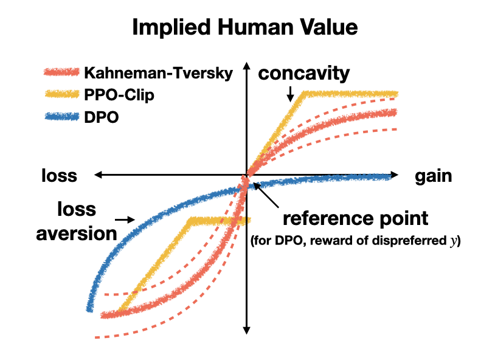
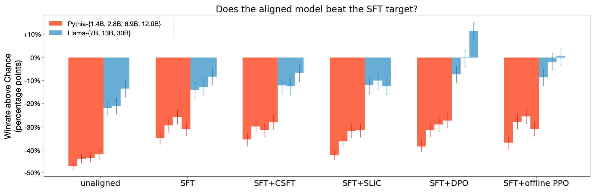
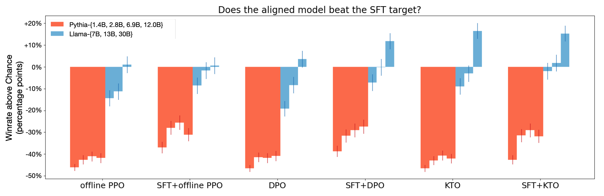
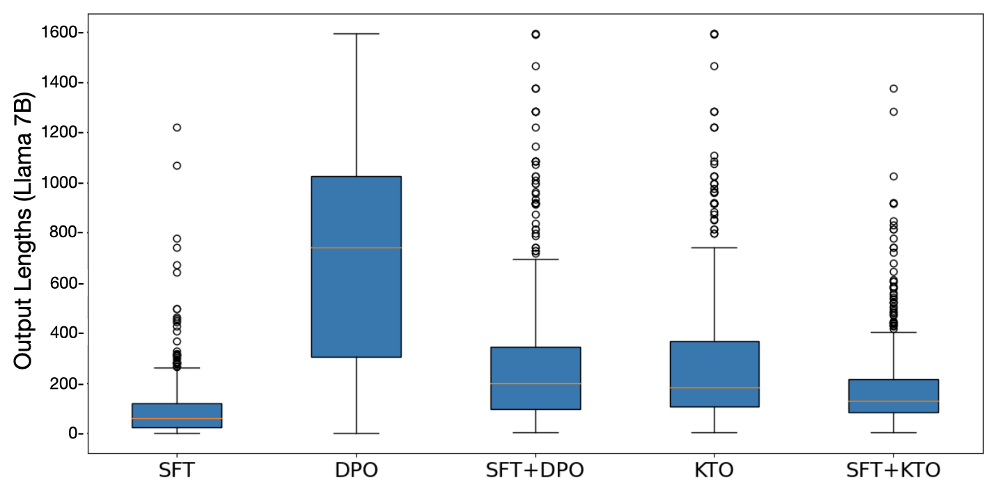
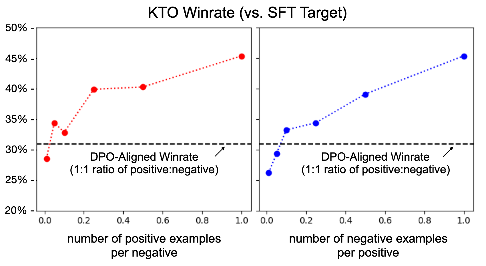
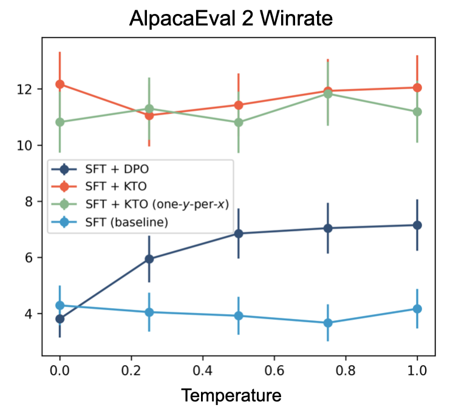

<!DOCTYPE html>
<html lang="zh-CN">
<head>
<meta charset="UTF-8">
<meta name="viewport" content="width=device-width, initial-scale=1.0">
<title>KTO: Model Alignment as Prospect Theoretic Optimization · 论文阅读</title>
<link href="https://fonts.googleapis.com/css2?family=JetBrains+Mono:wght@400;500;700&family=Lora:ital,wght@0,400;0,600;1,400&family=Manrope:wght@400;600;700;800&display=swap" rel="stylesheet">
<!-- KaTeX 公式渲染(普适于所有论文笔记) -->
<link rel="stylesheet" href="https://cdn.jsdelivr.net/npm/katex@0.16.9/dist/katex.min.css">
<script defer src="https://cdn.jsdelivr.net/npm/katex@0.16.9/dist/katex.min.js"></script>
<script defer src="https://cdn.jsdelivr.net/npm/katex@0.16.9/dist/contrib/auto-render.min.js"
  onload="renderMathInElement(document.body, {
    delimiters: [
      {left: '$$', right: '$$', display: true},
      {left: '\\[', right: '\\]', display: true},
      {left: '$', right: '$', display: false},
      {left: '\\(', right: '\\)', display: false}
    ],
    throwOnError: false,
    ignoredTags: ['script', 'noscript', 'style', 'textarea', 'pre', 'code']
  });"></script>
<style>
  :root {
    --bg: #ffffff;
    --bg-soft: #f6f8fa;
    --bg-card: #ffffff;
    --bg-elev: #f0f3f6;
    --border: #d0d7de;
    --border-soft: #e4e7eb;
    --text: #1f2328;
    --text-dim: #4a525a;
    --text-faint: #8b929a;
    --accent: #b07700;
    --learn: #1d4ed8;
    --research: #6d28d9;
    --exp: #c2410c;
    --note: #15803d;
    --mono: 'JetBrains Mono', monospace;
    --sans: 'Manrope', -apple-system, sans-serif;
    --serif: 'Lora', Georgia, serif;
  }
  * { margin: 0; padding: 0; box-sizing: border-box; }
  body {
    background: var(--bg); color: var(--text);
    font-family: var(--sans); font-size: 15px;
    line-height: 1.7; padding: 32px 24px 96px;
    min-height: 100vh;
  }
  .container { max-width: 980px; margin: 0 auto; }
  a { color: var(--accent); text-decoration: none; border-bottom: 1px dotted; }
  a:hover { border-bottom-style: solid; }
  
  /* ============ HEADER ============ */
  header {
    border-bottom: 1px solid var(--border);
    padding-bottom: 20px; margin-bottom: 24px;
  }
  .eyebrow {
    font-family: var(--mono); font-size: 11px;
    color: var(--text-faint); letter-spacing: 0.15em;
    text-transform: uppercase; margin-bottom: 8px;
  }
  h1 {
    font-size: 28px; font-weight: 800;
    letter-spacing: -0.01em; line-height: 1.25;
    margin-bottom: 12px;
  }
  .meta-bar {
    display: flex; gap: 12px; flex-wrap: wrap;
    font-family: var(--mono); font-size: 11px;
    color: var(--text-dim);
  }
  .meta-bar span {
    padding: 3px 8px; border-radius: 3px;
    background: var(--bg-elev); border: 1px solid var(--border);
  }
  .meta-bar .track-A { color: var(--learn); border-color: rgba(96,165,250,0.3); }
  .meta-bar .track-B { color: var(--research); border-color: rgba(167,139,250,0.3); }
  .meta-bar .track-C { color: var(--exp); border-color: rgba(249,115,22,0.3); }
  .meta-bar .prio-deep { color: #fca5a5; }
  .meta-bar .prio-read { color: #fdba74; }
  .meta-bar .prio-skim { color: #cbd5e1; }
  
  /* ============ NOTE PANEL (供 Claude 写阅读笔记) ============ */
  .note-panel {
    background: rgba(21, 128, 61, 0.05);
    border: 1px solid rgba(21, 128, 61, 0.25);
    border-left: 4px solid var(--note);
    border-radius: 5px;
    padding: 18px 22px;
    margin-bottom: 24px;
    font-size: 15.5px;
  }
  .note-panel .note-label {
    font-family: var(--mono); font-size: 11.5px;
    color: var(--note); font-weight: 700;
    letter-spacing: 0.1em; text-transform: uppercase;
    margin-bottom: 10px;
  }
  .note-panel .note-content { color: var(--text); line-height: 1.9; }
  .note-panel .note-content p { margin-bottom: 10px; }
  .note-panel .note-content ol, .note-panel .note-content ul { margin: 8px 0 10px 22px; }
  .note-panel .note-content li { margin-bottom: 8px; }
  .note-panel .note-content code {
    background: var(--bg-elev); padding: 2px 6px; border-radius: 3px;
    font-family: var(--mono); font-size: 12.5px; color: var(--exp);
    border: 1px solid var(--border-soft);
  }
  .note-panel .note-content strong { color: var(--note); }
  .note-panel.empty .note-content::before {
    content: "🤖 让 Claude 看完本页后,在此处填入: ①一句话总结 ②核心方法 ③图表导读 ④面试考点";
    color: var(--text-faint); font-style: italic;
  }
  
  /* ============ TOC ============ */
  .toc-section {
    background: var(--bg-soft);
    border: 1px solid var(--border);
    border-radius: 4px;
    padding: 14px 18px;
    margin-bottom: 24px;
  }
  .toc-title {
    font-family: var(--mono); font-size: 11px;
    color: var(--text-faint); letter-spacing: 0.1em;
    text-transform: uppercase; margin-bottom: 10px;
  }
  .toc ul { list-style: none; padding-left: 0; }
  .toc li {
    padding: 3px 0;
    font-family: var(--mono); font-size: 13px;
  }
  .toc li a {
    color: var(--text-dim); border-bottom: none;
  }
  .toc li a:hover { color: var(--accent); }
  .toc-page {
    color: var(--text-faint); font-size: 11px; margin-left: 6px;
  }
  
  /* ============ FIGURE GALLERY ============ */
  .figures-section {
    margin-bottom: 32px;
  }
  .section-title {
    font-size: 16px; font-weight: 700;
    color: var(--accent);
    padding-bottom: 6px;
    border-bottom: 1px dashed var(--border);
    margin-bottom: 16px;
  }
  .figure-grid {
    display: grid;
    grid-template-columns: repeat(auto-fill, minmax(280px, 1fr));
    gap: 14px;
  }
  .figure-card {
    background: var(--bg-card);
    border: 1px solid var(--border);
    border-radius: 6px;
    overflow: hidden;
    transition: border-color 0.2s, transform 0.2s;
  }
  .figure-card:hover {
    border-color: var(--accent);
    transform: translateY(-2px);
  }
  .figure-card img {
    width: 100%; height: 200px;
    object-fit: contain; display: block;
    background: #fff;
    cursor: zoom-in;
  }
  .figure-meta {
    padding: 10px 12px;
    font-family: var(--mono); font-size: 11px;
    color: var(--text-dim);
    border-top: 1px solid var(--border-soft);
  }
  .figure-meta .fig-id {
    color: var(--accent); font-weight: 700;
  }
  .figure-meta .fig-caption {
    margin-top: 4px; color: var(--text-dim);
    font-family: var(--sans); font-size: 12px;
    line-height: 1.5;
  }
  .figure-explain {
    padding: 12px 14px;
    background: rgba(29, 78, 216, 0.04);
    border-top: 1px solid var(--border-soft);
    font-size: 13px; color: var(--text);
    line-height: 1.75; min-height: 30px;
  }
  .figure-explain p { margin-bottom: 6px; }
  .figure-explain p:last-child { margin-bottom: 0; }
  .figure-explain strong { color: var(--learn); }
  .figure-explain code {
    background: var(--bg-elev); padding: 1px 5px; border-radius: 3px;
    font-family: var(--mono); font-size: 11.5px; color: var(--exp);
    border: 1px solid var(--border-soft);
  }
  .figure-explain:empty::before {
    content: "🤖 让 Claude 看图后写解读: ①图说明什么 ②关键数据 ③启示";
    color: var(--text-faint); font-style: italic;
  }
  
  /* ============ SECTION (论文章节) ============ */
  .paper-sections {
    margin-bottom: 24px;
  }
  details.sec {
    margin-bottom: 10px;
    background: var(--bg-card);
    border: 1px solid var(--border);
    border-radius: 6px;
    overflow: hidden;
  }
  details.sec[open] {
    border-color: var(--text-faint);
  }
  details.sec summary {
    padding: 12px 18px;
    cursor: pointer;
    font-weight: 600;
    background: var(--bg-elev);
    display: flex; justify-content: space-between;
    align-items: center;
    user-select: none;
    list-style: none;
  }
  details.sec summary::-webkit-details-marker { display: none; }
  details.sec summary::after {
    content: "▸"; color: var(--text-faint);
    transition: transform 0.2s;
  }
  details.sec[open] summary::after {
    transform: rotate(90deg);
  }
  details.sec summary:hover { background: var(--bg-soft); }
  .sec-page {
    font-family: var(--mono); font-size: 11px;
    color: var(--text-faint); font-weight: 400;
    margin-left: 8px;
  }
  .sec-content {
    padding: 20px 24px;
    font-size: 15.5px; line-height: 1.85;
    color: var(--text);
    white-space: normal;
    word-break: normal;
    overflow-wrap: break-word;
    hyphens: none;
  }
  .sec-content > p {
    font-family: var(--serif); font-size: 16px;
    margin-bottom: 12px;
  }
  .sec-content > p:last-child { margin-bottom: 0; }
  /* ============ 双语逐段对照 ============ */
  .sec-content.bilingual { padding: 8px 4px 20px; }
  .bi-section {
    margin: 22px 24px 12px;
    padding: 6px 0 4px;
    font-size: 17px; font-weight: 800;
    color: var(--learn);
    border-bottom: 2px solid rgba(29, 78, 216, 0.25);
    letter-spacing: -0.005em;
  }
  .bi-section:first-child { margin-top: 6px; }
  .bi-sub {
    margin: 16px 24px 8px;
    font-size: 14.5px; font-weight: 700;
    color: var(--research); letter-spacing: 0.02em;
    text-transform: uppercase;
  }
  .bi-pair {
    margin: 0 24px 18px;
    padding: 0;
    background: var(--bg-soft);
    border: 1px solid var(--border-soft);
    border-radius: 6px;
    overflow: hidden;
  }
  .bi-pair > .en, .bi-pair > .zh {
    padding: 16px 20px;
    line-height: 1.9;
    margin: 0;
  }
  .bi-pair > .en {
    font-family: var(--serif); font-size: 15.5px;
    color: var(--text);
    background: #fcfcfd;
    border-bottom: 1px solid var(--border-soft);
  }
  .bi-pair > .zh {
    font-family: var(--sans); font-size: 15px;
    color: var(--text);
    background: rgba(29, 78, 216, 0.03);
  }
  .bi-pair > .en > p, .bi-pair > .zh > p { margin: 0 0 10px; }
  .bi-pair > .en > p:last-child, .bi-pair > .zh > p:last-child { margin-bottom: 0; }
  .bi-pair > .en::before {
    content: "EN";
    display: inline-block;
    font-family: var(--mono); font-size: 10px;
    color: var(--text-faint); letter-spacing: 0.15em;
    margin-bottom: 6px; padding: 1px 6px;
    background: var(--bg-elev); border-radius: 3px;
  }
  .bi-pair > .zh::before {
    content: "中";
    display: inline-block;
    font-family: var(--mono); font-size: 10px;
    color: var(--learn); letter-spacing: 0.15em;
    margin-bottom: 6px; padding: 1px 6px;
    background: rgba(29, 78, 216, 0.08); border-radius: 3px;
  }
  .bi-eq {
    margin: 4px 0 6px;
    padding: 8px 10px;
    background: #fff;
    border: 1px solid var(--border-soft);
    border-radius: 4px;
    overflow-x: auto;
  }
  .bi-eq .katex-display { margin: 4px 0 !important; }
  .sec-claude-note {
    margin: 14px 22px 18px;
    font-family: var(--sans); font-size: 13.5px;
    color: var(--text);
  }
  .sec-claude-note:empty::before {
    content: "🤖 让 Claude 给这一节写中文摘要(可选)";
    color: var(--text-faint); font-style: italic;
  }
  /* ============ 中文导读折叠块 ============ */
  details.cn-note {
    margin-top: 8px;
    border: 1px solid rgba(29, 78, 216, 0.22);
    border-left: 4px solid var(--learn);
    border-radius: 5px;
    background: rgba(29, 78, 216, 0.04);
    overflow: hidden;
  }
  details.cn-note summary {
    padding: 10px 14px;
    cursor: pointer;
    font-family: var(--mono); font-size: 12px;
    color: var(--learn); font-weight: 700;
    letter-spacing: 0.08em; text-transform: uppercase;
    user-select: none; list-style: none;
    display: flex; justify-content: space-between; align-items: center;
  }
  details.cn-note summary::-webkit-details-marker { display: none; }
  details.cn-note summary::after {
    content: "▸"; color: var(--learn);
    transition: transform 0.2s;
  }
  details.cn-note[open] summary::after { transform: rotate(90deg); }
  details.cn-note summary:hover { background: rgba(29, 78, 216, 0.08); }
  .cn-content {
    padding: 14px 18px 16px;
    font-family: var(--sans); font-size: 14.5px;
    line-height: 1.9; color: var(--text);
    border-top: 1px solid rgba(29, 78, 216, 0.18);
  }
  .cn-content p { margin-bottom: 10px; }
  .cn-content ul, .cn-content ol { margin: 6px 0 10px 24px; }
  .cn-content li { margin-bottom: 6px; }
  .cn-content code {
    background: var(--bg-elev); padding: 2px 6px; border-radius: 3px;
    font-family: var(--mono); font-size: 12.5px; color: var(--exp);
    border: 1px solid var(--border-soft);
  }
  .cn-content strong { color: var(--note); }
  .katex { font-size: 1.02em !important; }
  .katex-display { margin: 12px 0 !important; padding: 6px 0; }
  
  /* ============ LIGHTBOX(图片放大 + 解读文字 同框)============ */
  .lightbox {
    display: none; position: fixed;
    top: 0; left: 0; right: 0; bottom: 0;
    background: rgba(15, 23, 42, 0.88);
    backdrop-filter: blur(4px);
    z-index: 1000;
    padding: 32px;
  }
  .lightbox.active { display: flex; flex-direction: column; align-items: center; gap: 18px; }
  .lightbox-img-wrap {
    flex: 1 1 auto;
    width: 100%;
    display: flex; justify-content: center; align-items: center;
    cursor: zoom-out;
    min-height: 0;
  }
  .lightbox-img-wrap img {
    max-width: 100%; max-height: 100%;
    object-fit: contain;
    background: #fff;
    padding: 10px;
    border-radius: 6px;
    box-shadow: 0 12px 36px rgba(0,0,0,0.4);
  }
  .lightbox-caption {
    flex: 0 0 auto;
    width: min(960px, 92%);
    max-height: 38vh; overflow-y: auto;
    background: #ffffff;
    color: var(--text);
    padding: 16px 22px;
    border-radius: 8px;
    border-left: 4px solid var(--learn);
    font-size: 14px; line-height: 1.8;
    box-shadow: 0 8px 24px rgba(0,0,0,0.3);
  }
  .lightbox-caption :first-child { margin-top: 0; }
  .lightbox-caption p { margin: 0 0 8px; }
  .lightbox-caption p:last-child { margin-bottom: 0; }
  .lightbox-caption strong { color: var(--learn); }
  .lightbox-caption code {
    background: var(--bg-elev); padding: 1px 5px; border-radius: 3px;
    font-family: var(--mono); font-size: 12px; color: var(--exp);
  }
  .lightbox-close {
    position: absolute; top: 16px; right: 20px;
    width: 36px; height: 36px;
    background: rgba(255,255,255,0.12);
    color: #fff; border: none; border-radius: 50%;
    font-size: 20px; line-height: 1; cursor: pointer;
    display: flex; align-items: center; justify-content: center;
  }
  .lightbox-close:hover { background: rgba(255,255,255,0.22); }
  .lightbox-meta {
    flex: 0 0 auto;
    color: rgba(255,255,255,0.7);
    font-family: var(--mono); font-size: 11px;
    letter-spacing: 0.1em;
  }
  
  /* ============ BACK LINK ============ */
  .back-link {
    position: fixed; top: 16px; left: 16px;
    background: var(--bg-soft);
    border: 1px solid var(--border);
    color: var(--text-dim);
    padding: 6px 12px; border-radius: 4px;
    font-family: var(--mono); font-size: 12px;
    z-index: 100;
  }
  .back-link:hover {
    color: var(--accent); border-color: var(--accent);
  }
</style>
</head>
<body>

<a href="../index.html" class="back-link">← 返回目录</a>

<div class="container">

  <header>
    <div class="eyebrow">arxiv:2402.01306 · 19 页 · 6 张图</div>
    <h1>KTO: Model Alignment as Prospect Theoretic Optimization</h1>
    <div class="meta-bar">
      <span class="track-A">轨道 A</span>
      <span class="prio-read">优先级 read</span>
      <span>W5</span>
      <span>DPO variant</span>
      <span><a href="https://arxiv.org/abs/2402.01306" target="_blank">原文 ↗</a></span>
      <span><a href="https://arxiv.org/pdf/2402.01306.pdf" target="_blank">PDF ↗</a></span>
    </div>
  </header>

  <!-- 阅读笔记面板(供 Claude 写一句话总结 / 面试考点) -->
  <div class="note-panel" id="overview-note">
    <div class="note-label">📝 论文一图速览(Claude Opus 4.7 填写)</div>
    <div class="note-content" data-editable>
      <p><strong>一句话总结:</strong>KTO 把对齐损失从"成对偏好的对数似然"换成"基于 prospect theory(Kahneman-Tversky 价值函数)的单样本效用",每条样本只需一个 desirable/undesirable 的二元标签——不再要求 chosen-rejected 配对,损失天然带 loss-aversion 的非对称性,可以直接在不平衡的二元反馈上规模化训练。</p>

      <p><strong>🎯 面试考点(高频):</strong></p>
      <ol>
        <li>
          <strong>KTO 损失必默写</strong>:把 K-T 原始价值函数 $v(z;\lambda,\alpha,z_0)=(z-z_0)^\alpha$(收益)、$-\lambda(z_0-z)^\alpha$(损失)中的指数换成 sigmoid 以稳数值,引入 $\beta$ 控制 risk-aversion、$\lambda_D/\lambda_U$ 控制 loss-aversion,得到
          $$\mathcal{L}_{\text{KTO}}(\pi_\theta;\pi_\mathrm{ref})=\mathbb{E}_{x,y\sim\mathcal{D}}\bigl[\lambda_y-v(x,y)\bigr],$$
          $$r_\theta(x,y)=\log\frac{\pi_\theta(y\mid x)}{\pi_\mathrm{ref}(y\mid x)},\quad z_0=\mathrm{KL}\bigl(\pi_\theta(y'\mid x)\,\|\,\pi_\mathrm{ref}(y'\mid x)\bigr),$$
          $$v(x,y)=\begin{cases}\lambda_D\,\sigma\!\bigl(\beta(r_\theta(x,y)-z_0)\bigr) & y\text{ 是 desirable}\\ \lambda_U\,\sigma\!\bigl(z_0-\beta\,r_\theta(x,y)\bigr) & y\text{ 是 undesirable}\end{cases}$$
          其中 $z_0$ 用 micro-batch 内错配样本的对数比做<em>有偏但低方差</em>估计,不反传梯度。
        </li>
        <li><strong>vs DPO 的关键差异</strong>:① 数据形态——DPO 要 $(x,y_w,y_l)$ 成对,KTO 只要 $(x,y,\text{label})$;② 损失目标——DPO 最大化偏好对数似然(Bradley-Terry),KTO 最大化每条样本的 K-T <em>效用</em>;③ 参考点——DPO 的隐式 reference point 是 $y_l$ 的奖励,KTO 的 reference point 是策略期望 KL;④ <em>非对称性</em>——KTO 的价值函数对 gain/loss 区域使用不同 sigmoid 折叠,DPO 是处处 concave 的 $\log\sigma$。</li>
        <li><strong>HALOs 形式化框架</strong>:作者把"满足 $f=\mathbb{E}[a_{x,y}\,v(r_\theta-\mathbb{E}_Q[r_\theta])]+C_\mathcal{D}$、价值函数在 gains 上 concave、有 reference point"的损失称为 human-aware loss。论文证明 DPO 与 PPO-Clip 都是 HALO(Theorem 3.5),CSFT 与 SLiC 不是;Figure 2 实验验证 HALO 普遍优于 non-HALO,即使用 +1/-1 dummy reward 的离线 PPO 也能追上 DPO。</li>
        <li><strong>$\beta$ 与 risk-aversion 参数</strong>:$\beta\!\uparrow$ → 价值函数饱和更快 → 收益侧更 risk-averse、损失侧更 risk-seeking;经验上小模型/无 SFT 直接 KTO 用 $\beta\in[0.1,1]$,大模型 + SFT 后 KTO 用 $\beta\in[0.01,0.10]$。<em>注意</em>:KTO 的 reward 数量级比 DPO 小,默认学习率要放大 2~10×(典型 5e-6 vs DPO 5e-7)。</li>
        <li><strong>数据不平衡下的鲁棒性</strong>:推荐设置 $\dfrac{\lambda_D n_D}{\lambda_U n_U}\in[1,\tfrac{4}{3}]$,即按 desirable:undesirable 反比加权。Llama-7B 实验:把 90% 的 desirable 数据丢掉(比例从 1:1 变到 1:10),仍能胜过 DPO——这是 DPO 这种成对损失做不到的。</li>
        <li><strong>KTO 能跳过 SFT</strong>:Llama-13B/30B 上直接 KTO 与 SFT+KTO 持平,而 DPO 不做 SFT 会让回复长度爆炸(Figure 4)——因为 KTO 的 $z_0$ 是动态 KL,自带"不要漂得太远"的隐式约束。</li>
        <li><strong>理论解释为何 KTO ≥ DPO(同份数据)</strong>:① <em>Theorem 4.2</em>——同一等价类的 reward 给出相同的 BT 偏好分布与最优策略,但<em>人类效用分布</em>不同,所以最大化偏好似然 ≠ 最大化人类效用;② <em>Theorem 4.3</em>——在偏好相互矛盾(intransitive)时,DPO 的最优解可能输出少数派偏好的 $y_b$,而 loss-neutral 的 KTO ($\lambda_D=\lambda_U$) 严格输出多数派偏好的 $y_a$。③ <em>Proposition 4.1</em>——当样本的 implied reward $\to\pm\infty$ 时 KTO 梯度自动归零,起到过滤噪声/误标的作用。</li>
        <li><strong>何时用 KTO vs DPO</strong>:二元 / 不平衡数据 → KTO 必选;成对偏好且<em>噪声小、传递性好</em> → DPO 更准;成对偏好但<em>嘈杂或自相矛盾</em>(SHP / OASST / UltraFeedback 这类多人标注集) → KTO 的最坏情况保证更稳。</li>
      </ol>
    </div>
  </div>

  <!-- 学习卡片(关键信息) -->
  <div class="toc-section">
    <div class="toc-title">📌 我对这篇的学习方针</div>
    <div style="font-family:var(--serif);font-style:italic;color:var(--text-dim);font-size:13.5px;">
      非成对数据,前景理论
    </div>
  </div>

  <!-- 章节目录 -->
  
  <div class="toc-section">
    <div class="toc-title">📚 章节目录</div>
    <ul class="toc">

      <li><a href="#sec-1">Preamble</a><span class="toc-page">p.1</span></li>

      <li><a href="#sec-2">Abstract</a><span class="toc-page">p.1</span></li>

      <li><a href="#sec-3a">§1 Introduction / 引言</a><span class="toc-page">p.1</span></li>

      <li><a href="#sec-3b">§2 Background / RLHF 与 DPO 预备</a><span class="toc-page">p.2</span></li>

      <li><a href="#sec-3c">§3 A Prospect Theoretic View / HALOs 框架</a><span class="toc-page">p.3</span></li>

      <li><a href="#sec-3d">§4.1 KTO / 损失推导</a><span class="toc-page">p.5</span></li>

      <li><a href="#sec-3e">§4.2-4.3 超参与实验</a><span class="toc-page">p.6</span></li>

      <li><a href="#sec-4">§4.4-4.5 理论分析与选择策略</a><span class="toc-page">p.9</span></li>

      <li><a href="#sec-5">References</a><span class="toc-page">p.11</span></li>

    </ul>
  </div>
  

  <!-- 图表画廊 -->
  
  <div class="figures-section">
    <h2 class="section-title">🖼 图表速览 (6 张) · 点击放大</h2>
    <div class="figure-grid">
      
      <div class="figure-card" id="fig_1">
        
        <div class="figure-meta">
          <div><span class="fig-id">fig_1</span> · p.1 · 814×574</div>
          <div class="fig-caption">Figure 1. The utility that a human gets from the outcome of a</div>
        </div>
        <div class="figure-explain" data-fig-id="fig_1">
          <p><strong>① 图说明:</strong>把 DPO、PPO-Clip 与 Kahneman-Tversky 三种"<em>implied human value function</em>"并排画在 gain-loss 坐标系里——横轴是 implied reward $r_\theta-z_0$,纵轴是该方法隐式赋给人类的效用。三条曲线都过 <code>reference point</code>,都在 gain 侧是 concave,都体现 <strong>loss aversion</strong>(在 0 左侧斜率比右侧陡)。</p>
          <p><strong>② 关键数据 / 对照:</strong>DPO 用 $\log\sigma$,处处 concave 且收益侧有限增长;PPO-Clip 用 clip 形成折线、明显的 loss-averse 拐点;KTO 选用的 Kahneman-Tversky 曲线在收益侧 concave(diminishing sensitivity)、在损失侧 convex 并由 $\lambda$ 放大斜率。DPO 的 reference point = 那条偏好对里 dispreferred $y_l$ 的 implied reward;KTO 的 reference point = 策略期望 KL,跨样本共享。</p>
          <p><strong>③ 启示:</strong>这是论文整篇的核心隐喻图——它把 "为什么 DPO/PPO 能 work" 解释成"它们都偷偷实现了 prospect theory 的损失"。把价值函数显式化以后,KTO 就敢扔掉成对偏好、只要 desirable/undesirable 二元标签:因为损失里已经内建了 loss-aversion 与参考点,信号弱不再致命。读这张图要盯三件事:① 是否过 reference point;② gain 侧是否 concave;③ loss 侧斜率是否更陡(loss aversion)。</p>
        </div>
      </div>
      
      <div class="figure-card" id="fig_2">
        
        <div class="figure-meta">
          <div><span class="fig-id">fig_2</span> · p.4 · 1954×628</div>
          <div class="fig-caption">Figure 2. HALOs (DPO, offline PPO) outperform non-HALOs (SLiC, CSFT).</div>
        </div>
        <div class="figure-explain" data-fig-id="fig_2">
          <p><strong>① 图说明:</strong>HALO vs non-HALO 的横评柱状图。横轴是六种方法(unaligned / SFT / SFT+CSFT / SFT+SLiC / SFT+DPO / SFT+offline-PPO),纵轴是"GPT-4 评测胜率减 50%",即<em>能否打败 SFT target</em>。红色 = Pythia 系列(1.4B/2.8B/6.9B/12B),蓝色 = Llama 系列(7B/13B/30B)。</p>
          <p><strong>② 关键数据 / 对照:</strong>CSFT、SLiC 两个 non-HALO 几乎不动指针,Llama-13B/30B 仍然 ≈ -10%~-12%;DPO 与 offline-PPO 这两个 HALO 在 13B+ 才显著翻正(SFT+DPO 在 Llama-30B 达到 +10%)。差距只有在 13B+ 才显著($p<0.05$)。值得注意的是:<em>用 dummy +1/-1 reward 的 offline PPO 也能追平 DPO</em>,说明"只要损失带对的 inductive bias,即使奖励信号极简也能 work"。</p>
          <p><strong>③ 启示:</strong>这张图是 KTO 的 motivation——它告诉作者:① HALO 性质本身可能比"奖励有多丰富"更关键;② 既然 +1/-1 这种二元 dummy reward 都行,那不要成对偏好、只要 desirable/undesirable 标签也应该可行;③ 但 offline-PPO 仍在 30B 上掉队,所以还需要一个"从 prospect theory 推出的、更原则化"的 HALO,这就是 KTO 的存在理由。</p>
        </div>
      </div>
      
      <div class="figure-card" id="fig_3">
        
        <div class="figure-meta">
          <div><span class="fig-id">fig_3</span> · p.7 · 1950×632</div>
          <div class="fig-caption">Figure 3. KTO is as good or better than DPO at all scales, as measured by the GPT-4-0613-judged winrate of the aligned model’s</div>
        </div>
        <div class="figure-explain" data-fig-id="fig_3">
          <p><strong>① 图说明:</strong>KTO 与 DPO 在所有规模上的横评。六个组分别是 offline PPO / SFT+offline PPO / DPO / SFT+DPO / KTO / SFT+KTO,红色 = Pythia 1.4B-12B,蓝色 = Llama 7B-30B,纵轴是相对 SFT-target 的胜率减 50%。</p>
          <p><strong>② 关键数据 / 对照:</strong>Llama-30B 上 KTO ≈ +17%、SFT+KTO ≈ +16% 显著高于 SFT+DPO 的 +10%;Llama-13B 上 KTO 与 SFT+DPO 持平。更亮的点是:<em>KTO 不做 SFT 也能匹配 SFT+KTO</em>(Llama 系列),而 DPO 不做 SFT 显著掉点(Llama-30B 蓝柱从 +10% 跌至 +3%)。Pythia 上整体不显著,作者解释为模型容量不够、HALO 优势难以显现。</p>
          <p><strong>③ 启示:</strong>这张图是 KTO 的主结果——传达"在 1B-30B 全部规模上,KTO ≥ DPO";尤其在大模型上 KTO 可以<em>跳过 SFT</em>,这是 DPO 做不到的(没 SFT 时 DPO 会让回复长度爆炸,见 Figure 4)。背后机制:KTO 的 $z_0$ 是动态 KL,本身就把策略锚在 $\pi_\mathrm{ref}$ 附近;而 DPO 的 reference point 是 $y_l$ 的隐式 reward,如果 $\pi_\mathrm{ref}$ 没经过 SFT、$y_l$ 又是天然分布外,锚点就漂了。</p>
        </div>
      </div>
      
      <div class="figure-card" id="fig_4">
        
        <div class="figure-meta">
          <div><span class="fig-id">fig_4</span> · p.8 · 1436×710</div>
          <div class="fig-caption">Figure 4. Output length distributions for Llama-7B aligned with SFT / DPO / KTO variants.</div>
        </div>
        <div class="figure-explain" data-fig-id="fig_4">
          <p><strong>① 图说明:</strong>Llama-7B 在五种方案下的输出长度分布箱线图(SFT / DPO / SFT+DPO / KTO / SFT+KTO)。纵轴是 token 数,直观看见对齐之后回复变了多长。</p>
          <p><strong>② 关键数据 / 对照:</strong>SFT 中位数 ≈ 80,DPO(无 SFT)中位数飙到 ≈ 740,整个箱体跨 300-1000;SFT+DPO 拉回到 ≈ 200;<em>KTO 单独(无 SFT)中位数仅 ≈ 180,与 SFT+KTO 几乎一致</em>。也就是说 DPO 没 SFT 兜底就"啰嗦+幻觉整段对话",KTO 没这个病。</p>
          <p><strong>③ 启示:</strong>这是 KTO 能跳过 SFT 的实证证据。原因有二:① KTO 的 reference point $z_0$ 是动态 KL,KL 项隐式约束模型别漂太远;② 单样本损失让"提升 desirable 的 $\log\pi$"与"压低 undesirable 的 $\log\pi$"被 $\sigma$ 独立饱和,不像 DPO 那样靠"拉开 $y_w$ 与 $y_l$ 的 margin"——后者在 $\pi_\mathrm{ref}$ 未 SFT 时会通过疯狂加 token 来制造 margin。工业上,这意味着上线 KTO 时不必先做一轮 SFT,数据预处理与训练管线大幅简化。</p>
        </div>
      </div>
      
      <div class="figure-card" id="fig_5">
        
        <div class="figure-meta">
          <div><span class="fig-id">fig_5</span> · p.9 · 1700×932</div>
          <div class="fig-caption">Figure 5. KTO matches or exceeds DPO with up to 90% desirable/undesirable examples discarded.</div>
        </div>
        <div class="figure-explain" data-fig-id="fig_5">
          <p><strong>① 图说明:</strong>数据不平衡稳健性测试,KTO-aligned Llama-7B 的胜率随<em>desirable:undesirable 比例</em>变化。左图固定负样本数、横轴是"每个负样本对应几个正样本"(从 0.01 到 1);右图反过来。虚线是 1:1 平衡比例下 DPO 的胜率(约 31%)作为参照。</p>
          <p><strong>② 关键数据 / 对照:</strong>左图:正:负 = 0.1(扔掉 90% desirable)时 KTO 胜率仍 ≈ 33% > DPO 31%;比例 = 0.25(扔掉 75%)时已是 ≈ 40%;1:1 时 ≈ 45%。右图同样:即使只用 0.1× 的 undesirable 也能追上 DPO。作者通过 $\lambda_D n_D/\lambda_U n_U\in[1, 4/3]$ 这条经验式动态调整 loss-aversion 系数。</p>
          <p><strong>③ 启示:</strong>这是 KTO 工业可用的关键卖点——真实业务里 thumbs-up/thumbs-down 这种二元反馈本来就严重失衡(thumbs-up 远多于 down),DPO 需要成对、必然要丢掉大量未配对样本;KTO 直接吃所有标签且能通过 $\lambda_D,\lambda_U$ 重新平衡,理论上 desirable:undesirable 可以差一个数量级仍能训。注意 9-条 hyperparam rule:$\lambda_D n_D \approx \lambda_U n_U$ 即按"逆样本数"加权。</p>
        </div>
      </div>
      
      <div class="figure-card" id="fig_6">
        
        <div class="figure-meta">
          <div><span class="fig-id">fig_6</span> · p.18 · 774×686</div>
          <div class="fig-caption">Figure 6. AlpacaEval 2 winrate vs. temperature for SFT / DPO / KTO / KTO (one-y-per-x).</div>
        </div>
        <div class="figure-explain" data-fig-id="fig_6">
          <p><strong>① 图说明:</strong>AlpacaEval 2 胜率随采样温度的变化(Mistral-7B 在 OpenAssistant 上做对齐,GPT-4-turbo 作 LM judge)。四条线:SFT+DPO、SFT+KTO、SFT+KTO (one-y-per-x)、SFT baseline。</p>
          <p><strong>② 关键数据 / 对照:</strong>所有温度下 SFT+KTO ≈ 11-12%、SFT+KTO (one-y-per-x) ≈ 11%,而 SFT+DPO 从温度 0 的 ≈ 4% 缓慢上升到 ≈ 7%,SFT baseline 始终 ≈ 4%。<em>关键观察</em>:KTO (one-y-per-x) 即每条 prompt 只看 desirable 或 undesirable 一个回答(数据量砍掉 72%),仍然显著高于看了完整 $(y_w,y_l)$ 对的 DPO。</p>
          <p><strong>③ 启示:</strong>① 这是"KTO 的胜利不来自偏好数据的隐含结构、而是损失本身"的最干净证据——把 paired 信息抹掉,KTO 照样赢;② KTO 对温度更鲁棒(几乎水平线),DPO 在低温下表现差很多;③ 对工程而言,这意味着 KTO 在<em>分布天然不配对</em>的反馈源(线上 thumbs-up/down、规则打分)上仍然 work,而 DPO 需要费力把数据强行配对。</p>
        </div>
      </div>
      
    </div>
  </div>
  

  <!-- 章节正文 -->
  
  <div class="paper-sections">
    <h2 class="section-title">📖 论文正文(英文,按章节折叠)</h2>
    
    <details class="sec" id="sec-1">
      <summary>
        <span>Preamble<span class="sec-page">p.1</span></span>
      </summary>
      <div class="sec-content"><p>KTO: Model Alignment as Prospect Theoretic Optimization Kawin Ethayarajh 1 Winnie Xu 2 Niklas Muennighoff 2 Dan Jurafsky 1 Douwe Kiela 1 2</p></div>
      <div class="sec-claude-note" data-sec-idx="1"></div>
    </details>
    
    <details class="sec" id="sec-2">
      <summary>
        <span>Abstract<span class="sec-page">p.1</span></span>
      </summary>
      <div class="sec-content bilingual">

        <div class="bi-pair">
          <div class="en">
            <p>Kahneman &amp; Tversky's prospect theory tells us that humans perceive random variables in a biased but well-defined manner (1992); for example, humans are famously loss-averse. We show that objectives for aligning LLMs with human feedback implicitly incorporate many of these biases—the success of these objectives (e.g., DPO) over cross-entropy minimization can partly be ascribed to them belonging to a family of loss functions that we call human-aware losses (HALOs). However, the utility functions these methods attribute to humans still differ from those in the prospect theory literature.</p>
            <p>Using a Kahneman-Tversky model of human utility, we propose a HALO that directly maximizes the utility of generations instead of maximizing the log-likelihood of preferences, as current methods do. We call this approach KTO, and it matches or exceeds the performance of preference-based methods at scales from 1B to 30B, despite only learning from a binary signal of whether an output is desirable. More broadly, our work suggests that there is no one HALO that is universally superior; the best loss depends on the inductive biases most appropriate for a given setting, an oft-overlooked consideration.</p>
          </div>
          <div class="zh">
            <p>Kahneman 与 Tversky 的 prospect theory 告诉我们,人类以一种有偏差但定义明确的方式感知随机变量(1992);例如,众所周知人类是<em>厌恶损失</em>的。我们指出,把 LLM 与人类反馈对齐所用的目标函数,<em>隐式地</em>融入了许多这类偏差——这些目标函数(例如 DPO)相对于交叉熵最小化的成功,可以部分归因于它们属于一族我们称为 <strong>human-aware losses(HALOs)</strong> 的损失函数。然而,这些方法所赋予人类的效用函数,与 prospect theory 文献中的形式仍存在差异。</p>
            <p>我们使用 Kahneman-Tversky 的人类效用模型,提出一个 HALO,它<em>直接最大化生成的效用</em>,而不是像当前方法那样最大化偏好的对数似然。我们称这种方法为 KTO,在 1B 到 30B 的规模上,它持平或超过基于偏好的方法,尽管 KTO 仅从"一个输出是否 desirable"这种二元信号中学习。更广泛地说,我们的工作表明:并不存在一种<em>普适最优</em>的 HALO;最好的损失取决于在给定场景下最合适的归纳偏置——这是一个常被忽视的考量。</p>
          </div>
        </div>

      </div>

      <div class="sec-claude-note" data-sec-idx="2"></div>
    </details>
    
    <details class="sec" id="sec-3a">
      <summary>
        <span>§1 Introduction / 引言<span class="sec-page">p.1</span></span>
      </summary>
      <div class="sec-content bilingual">

        <div class="bi-pair">
          <div class="en">
            <p>Aligning generative models with human feedback has been successfully used to make generations more helpful, factual, and ethical, among other desiderata. For LLMs, alignment methods such as RLHF and DPO have consistently proven to be more beneficial than doing supervised finetuning (SFT) alone. However, human feedback is often discussed only in the context of <em>preferences</em> (e.g., output $y_w \succ y_l$ for input $x$), even though it can take many forms (e.g., approval/disapproval of $y$ given $x$). This is because preferences, despite being a kind of data that is relatively scarce and expensive to collect in practice, are required by the alignment methods shown to work best—RLHF and DPO.</p>
          </div>
          <div class="zh">
            <p>把生成模型与人类反馈对齐,已被成功用于让生成结果更<em>helpful、factual、ethical</em>等等。对 LLM 来说,RLHF、DPO 等对齐方法持续被证明优于单做监督微调(SFT)。然而,人类反馈通常只在<em>偏好</em>的语境下被讨论(例如对输入 $x$,输出 $y_w \succ y_l$),哪怕它本可以有许多其它形式(例如对 $y$ 给定 $x$ 的 approve / disapprove)。这是因为偏好——虽然实际上是一种<em>稀缺、昂贵</em>的数据——却是 RLHF 与 DPO 这些"目前已知最 work 的对齐方法"所要求的输入。</p>
          </div>
        </div>

        <div class="bi-pair">
          <div class="en">
            <p>To understand why these methods work so well, and whether feedback needs to be in preference form, we frame alignment through the lens of <strong>prospect theory</strong>. Prospect theory explains why humans make decisions about uncertain events that do not maximize their expected value. It formalizes how humans perceive random variables in a biased but well-defined manner; for example, relative to some reference point, humans are more sensitive to losses than gains, a property called <em>loss aversion</em>. We show that popular alignment methods such as DPO and PPO-Clip implicitly model some of these biases, helping explain their success independently of the data used (§3.2). We then propose a more general class of such loss functions called <strong>human-aware losses (HALOs)</strong>.</p>
          </div>
          <div class="zh">
            <p>为了理解"为什么这些方法这么 work",以及"反馈是否必须是偏好形式",我们用 <strong>prospect theory</strong> 的视角去重审对齐。prospect theory 解释了为什么人在面对不确定事件时,做的决策并不<em>最大化期望值</em>。它把"人类以一种有偏但定义明确的方式感知随机变量"这件事形式化;例如相对于某个参考点,人对<em>损失</em>比对<em>同样大小的收益</em>更敏感——这种性质叫 <em>loss aversion</em>。我们证明,DPO、PPO-Clip 这些流行对齐方法<em>隐式地</em>建模了其中一些偏差,这有助于解释为何它们的成功与所用数据无关(§3.2)。我们进而提出更一般的一类此种损失函数——<strong>human-aware losses(HALOs)</strong>。</p>
          </div>
        </div>

        <div class="bi-pair">
          <div class="en">
            <p>Although it is impossible to say that HALOs are categorically better than non-HALOs, we find that among existing methods, those that meet the definition of a HALO work better than those that do not (§3.3). We find that DPO performance can even be matched at most scales by running an offline PPO variant on dummy $+1/-1$ rewards, suggesting that <em>preference data might not be needed if the inductive bias in the loss function is good enough</em>. However, despite the surprising success of this simple baseline, it significantly lags behind DPO at the 30B LLM scale and suffers from hyperparameter sensitivity, making it difficult to use.</p>
          </div>
          <div class="zh">
            <p>虽然我们无法断言 HALO 在<em>类别上</em>就一定优于 non-HALO,但我们发现:在现有方法里,满足 HALO 定义的那些方法,确实比不满足的那些 work 得更好(§3.3)。我们甚至发现:把 offline PPO 变体跑在<em>哑 $+1/-1$ 奖励</em>上,也能在大多数规模上追平 DPO——这暗示<em>如果损失函数的归纳偏置够好,偏好数据其实并非必需</em>。然而,尽管这个简单基线"出奇地能打",它在 30B 规模上仍显著落后于 DPO,而且对超参数敏感,实务上不好用。</p>
          </div>
        </div>

        <div class="bi-pair">
          <div class="en">
            <p>Taking a more principled approach, we derive a HALO using the model of human utility that Kahneman &amp; Tversky proposed to describe how humans make decisions about uncertain monetary outcomes. This approach, which we call <strong>Kahneman-Tversky Optimization (KTO)</strong>, directly maximizes the utility of generations instead of maximizing the log-likelihood of preferences, as most current methods do (§4.1). KTO only requires a binary signal of whether an output is desirable or undesirable for an input. This data is more abundant, cheaper, and faster to collect in the real world, making it easier to scale alignment in production and rapidly iterate on models. We find that: (i) KTO matches or exceeds DPO performance at scales from 1B to 30B parameters; (ii) KTO can handle extreme data imbalances, matching DPO performance while using up to 90% fewer desirable examples; (iii) when the pretrained model is sufficiently good, one can skip SFT and go straight to KTO without a loss in generation quality, whereas SFT is always needed for best results with DPO.</p>
          </div>
          <div class="zh">
            <p>采取更<em>有原则</em>的做法,我们用 Kahneman 与 Tversky 用来描述人面对不确定金钱结果时如何决策的<em>人类效用模型</em>,直接推出一个 HALO。这种方法,我们称之为 <strong>Kahneman-Tversky Optimization(KTO)</strong>,它直接最大化生成的效用,而不是像大多数现有方法那样最大化偏好的对数似然(§4.1)。KTO 只需要一个二元信号:对给定输入,某个输出是 desirable 还是 undesirable。在真实世界里,这种数据远比偏好数据丰富、便宜、收集得快,因此更利于在生产环境扩展对齐与快速迭代。我们发现:① KTO 在 1B 到 30B 规模上持平或超过 DPO;② KTO 能处理极端的数据不平衡——把 desirable 样本砍掉 90% 仍能追平 DPO;③ 当预训练模型足够好时,可以跳过 SFT 直接做 KTO 而不损失生成质量,而 DPO 想要最好结果必须先做 SFT。</p>
          </div>
        </div>

        <div class="bi-pair">
          <div class="en">
            <p>The intent behind KTO was that even if the model learns from a weaker signal, we could compensate with the higher volume of data that could be accessed in practice; the fact that KTO can match and even outperform DPO <em>on the same data</em> is thus surprising. We conclude by discussing some theoretical explanations for this phenomenon (§4.4). Despite the success of KTO in our experiments, our work ultimately suggests that there is no one HALO that is universally superior; the best HALO depends on the inductive biases appropriate for a given setting, and this choice should be made deliberately instead of defaulting to any one loss.</p>
          </div>
          <div class="zh">
            <p>KTO 背后的最初动机是:即使模型从一个<em>更弱的信号</em>学起,我们也可以靠"实务里更容易拿到的更大数据量"来补——但<em>在相同数据上</em>KTO 居然也能追平甚至超过 DPO,这一点是出乎意料的。我们在 §4.4 给出两条理论解释。尽管 KTO 在我们的实验里很成功,这份工作最终想传达的是:并不存在一个普适最优的 HALO;最好的 HALO 取决于具体场景的归纳偏置,这一选择应当被<em>慎重作出</em>,而不是默认套用某一种损失。</p>
          </div>
        </div>

      </div>
      <div class="sec-claude-note" data-sec-idx="3a"></div>
    </details>

    <details class="sec" id="sec-3b">
      <summary>
        <span>§2 Background / RLHF 与 DPO 预备<span class="sec-page">p.2</span></span>
      </summary>
      <div class="sec-content bilingual">

        <div class="bi-pair">
          <div class="en">
            <p>In brief, LLMs are traditionally trained in three stages. <strong>Pretraining</strong>: given a large corpus, train the model to maximize the log-likelihood of the next token conditioned on the preceding text. Let $\pi_0$ denote the pretrained model. <strong>Supervised Finetuning (SFT)</strong>: finetune the model to predict the next token on data that is more relevant to the downstream task. Often, such data will comprise instructions and an appropriate response (i.e., instruction finetuning). Let $\pi_\mathrm{ref}$ denote the finetuned model.</p>
          </div>
          <div class="zh">
            <p>简要回顾:LLM 通常按三阶段训练。<strong>预训练</strong>:给定大语料,训模型最大化"以前文为条件的下一个 token"的对数似然。记预训练模型为 $\pi_0$。<strong>监督微调(SFT)</strong>:在与下游任务更相关的数据上继续训下一 token 预测,数据通常是"指令 + 合适回复"(即 instruction-tuning)。记微调后的模型为 $\pi_\mathrm{ref}$。</p>
          </div>
        </div>

        <div class="bi-pair">
          <div class="en">
            <p><strong>RLHF</strong>: given a dataset $\mathcal{D}$ of preferences $(x, y_w, y_l)$—where $x$ is an input, $y_w, y_l$ are the preferred and dispreferred outputs (i.e., $y_w \succ y_l$ for $x$), and $r^*$ is the "true" reward function underlying the preferences—it is first assumed that the probability that $y_w$ is preferred to $y_l$ can be captured with a specific function class, typically a Bradley-Terry model. Where $\sigma$ is the logistic function:</p>
            <div class="bi-eq">$$p^*(y_w \succ y_l \mid x) = \sigma\bigl(r^*(x, y_w) - r^*(x, y_l)\bigr). \quad (1)$$</div>
            <p>Since getting the true reward from a human would be intractably expensive, a reward model $r_\phi$ learns to serve as a proxy, done by minimizing the negative log-likelihood of the human preference data:</p>
            <div class="bi-eq">$$\mathcal{L}_R(r_\phi) = \mathbb{E}_{x,y_w,y_l\sim\mathcal{D}}\bigl[-\log \sigma\bigl(r_\phi(x, y_w) - r_\phi(x, y_l)\bigr)\bigr].$$</div>
          </div>
          <div class="zh">
            <p><strong>RLHF</strong>:给定偏好数据集 $\mathcal{D}$,样本为 $(x, y_w, y_l)$——$x$ 是输入,$y_w$、$y_l$ 分别为<em>偏好</em>与<em>非偏好</em>的输出($y_w\succ y_l\mid x$),$r^*$ 是潜在的"真奖励"函数。一般首先假设"$y_w$ 被偏好于 $y_l$ 的概率"可由某个函数类(典型为 Bradley-Terry)捕捉,$\sigma$ 为 sigmoid 时见公式 (1)。由于直接从人那里取得 $r^*$ 几乎不可行,因此训练一个奖励模型 $r_\phi$ 作为代理,做法是最小化人类偏好数据的负对数似然(见上式)。</p>
          </div>
        </div>

        <div class="bi-pair">
          <div class="en">
            <p>But solely maximizing the reward might come at the expense of desiderata such as generating grammatical text. To avoid this, a KL divergence penalty is introduced to restrict how far the language model can drift from $\pi_\mathrm{ref}$. Where $\pi_\theta$ is the model we are optimizing, the optimal model $\pi^*$ is that which maximizes</p>
            <div class="bi-eq">$$\mathbb{E}_{x\in\mathcal{D},\,y\in\pi_\theta}\bigl[r_\phi(x, y)\bigr] - \beta\, D_{\mathrm{KL}}\bigl(\pi_\theta(y\mid x)\,\|\,\pi_\mathrm{ref}(y\mid x)\bigr), \quad (2)$$</div>
            <p>where $\beta > 0$ is a hyperparameter. Since this objective is not differentiable, we need to use an RL algorithm like PPO. However, RLHF is often slow (largely because of having to sample generations) and quite unstable in practice (especially in a distributed setting). For this reason, recent work has focused on designing closed-form losses that maximize the margin between the preferred and dispreferred generations. In particular, <strong>Direct Preference Optimization (DPO)</strong> has emerged as a popular alternative as it allows the same optimal policy as in RLHF to be recovered under certain conditions:</p>
            <div class="bi-eq">$$\mathcal{L}_{\text{DPO}}(\pi_\theta,\pi_\mathrm{ref}) = \mathbb{E}_{x,y_w,y_l\sim\mathcal{D}}\!\left[-\log\sigma\!\left(\beta\log\tfrac{\pi_\theta(y_w\mid x)}{\pi_\mathrm{ref}(y_w\mid x)} - \beta\log\tfrac{\pi_\theta(y_l\mid x)}{\pi_\mathrm{ref}(y_l\mid x)}\right)\right]. \quad (3)$$</div>
          </div>
          <div class="zh">
            <p>但只盯着最大化奖励,可能会牺牲其它要求(比如生成<em>语法正确的</em>文本)。为避免这种漂移,引入 KL 散度惩罚,限制语言模型偏离 $\pi_\mathrm{ref}$ 的程度。记我们优化的模型为 $\pi_\theta$,则最优模型 $\pi^*$ 是公式 (2) 的极大化解,其中 $\beta>0$ 是超参。由于该目标不可微,需要 PPO 这种 RL 算法来优化。然而 RLHF 通常很慢(主要瓶颈是要采样生成)、实务上很不稳定(尤其在分布式设定)。因此近年工作转向<em>闭式损失</em>,直接拉开 preferred 与 dispreferred 输出的 margin。其中最具代表性的是 <strong>DPO</strong>:在一定条件下它的最优策略与 RLHF 相同,损失见公式 (3)。</p>
          </div>
        </div>

      </div>
      <div class="sec-claude-note" data-sec-idx="3b"></div>
    </details>

    <details class="sec" id="sec-3c">
      <summary>
        <span>§3 A Prospect Theoretic View / HALOs 框架<span class="sec-page">p.3</span></span>
      </summary>
      <div class="sec-content bilingual">

        <div class="bi-pair">
          <div class="en">
            <p>To understand why alignment methods work so well, we now frame them through the lens of prospect theory. Prospect theory explains why, when faced with an uncertain event, humans make decisions that do not maximize their expected value. For example, because humans are loss-averse, given a gamble that returns \$100 with 80% probability and \$60 with 20% probability, a person might accept \$60 to avoid the gamble, despite their certainty equivalent of \$60 being less than the expected value of \$80.</p>
            <p><strong>3.1 Prospect Theory.</strong> In prospect theory, human utility depends on a value function and a weighting function. A <em>value function</em> $v:\mathcal{Z}\to\mathbb{R}$ maps an outcome $z$, relative to some reference point $z_0$, to its perceived (or subjective) value. A <em>weighting function</em> $\omega$ is the derivative of a capacity function that maps cumulative probabilities to perceived cumulative probabilities. The utility of a random variable $Z$ is $u(Z) \triangleq \sum_{z\in Z} \omega_z\, v(z - z_0)$. Because humans do not see the full probability distribution of an LLM, weighting functions are not salient to this discussion; we focus only on value functions.</p>
          </div>
          <div class="zh">
            <p>为理解为何对齐方法这么 work,我们改用 prospect theory 的视角来分析。prospect theory 解释了为什么人面对不确定事件时,做出的决策并不最大化期望值。例如,因为人厌恶损失,给一个"80% 概率得 \$100、20% 概率得 \$60"的赌博,人可能选择直接拿 \$60 退出,尽管他的<em>确定性等价物</em> \$60 小于期望值 \$80。</p>
            <p><strong>3.1 Prospect Theory。</strong>在 prospect theory 中,人的效用由<em>价值函数</em> $v$ 与<em>权重函数</em> $\omega$ 共同决定。<em>价值函数</em> $v:\mathcal{Z}\to\mathbb{R}$ 把一个结果 $z$ 相对于参考点 $z_0$ 映射到其<em>主观感知价值</em>;<em>权重函数</em> $\omega$ 把累积概率映到感知的累积概率。随机变量 $Z$ 的效用为 $u(Z)\triangleq\sum_{z\in Z}\omega_z\,v(z-z_0)$。因为人看不到 LLM 的完整概率分布,权重函数在我们的讨论里不显著;本文只关注价值函数。</p>
          </div>
        </div>

        <div class="bi-pair">
          <div class="en">
            <p>Using experiments that presented real humans with monetary gambles and asked for their certainty equivalent, Tversky &amp; Kahneman (1992) proposed the following functional form for human value:</p>
            <div class="bi-eq">$$v(z;\lambda,\alpha,z_0) = \begin{cases}(z - z_0)^\alpha & \text{if } z \geq z_0\\ -\lambda\,(z_0 - z)^\alpha & \text{if } z < z_0\end{cases} \quad (4)$$</div>
            <p>where the median value of hyperparameter $\alpha = 0.88$ and $\lambda = 2.25$ across individuals. $\alpha$ controls the curvature of the function, which reflects <em>risk aversion</em>; $\lambda$ controls its steepness, which reflects <em>loss aversion</em>. The salient qualities of a value function are: the existence of a reference point that is used to get the relative gain or loss; concavity in relative gains (i.e., diminishing sensitivity away from $z_0$); and loss aversion (i.e., greater sensitivity to losses).</p>
          </div>
          <div class="zh">
            <p>Tversky 与 Kahneman(1992)用"给真人做金钱赌博、要其确定性等价物"的实验,得到如下人类价值函数形式(见公式 (4)),其中跨个体的中位数 $\alpha = 0.88$、$\lambda = 2.25$。$\alpha$ 控制曲线的<em>曲率</em>,体现<em>风险厌恶</em>;$\lambda$ 控制陡峭度,体现<em>损失厌恶</em>。价值函数的关键性质是:① 存在<em>参考点</em>用来计算相对收益/损失;② 在收益侧 <em>concave</em>(远离 $z_0$ 时敏感性递减);③ <em>loss aversion</em>(对损失更敏感)。</p>
          </div>
        </div>

        <div class="bi-pair">
          <div class="en">
            <p><strong>3.2 HALOs.</strong> Let $\theta$ denote the trainable parameters of the model $\pi_\theta:\mathcal{X}\to\mathcal{P}(\mathcal{Y})$ being aligned, $\pi_\mathrm{ref}$ the reference model, $l:\mathcal{Y}\to\mathbb{R}_+$ a normalizing factor, and $r_\theta(x, y) = l(y)\log[\pi_\theta(y\mid x)/\pi_\mathrm{ref}(y\mid x)]$ the <em>implied reward</em>. Where $Q(Y'\mid x)$ is a reference point distribution over $\mathcal{Y}$ and $v:\mathbb{R}\to\mathbb{R}$ is non-decreasing everywhere and concave in $(0,\infty)$, the human value of $(x, y)$ is $v\!\bigl(r_\theta(x, y) - \mathbb{E}_Q[r_\theta(x, y')]\bigr)$ (Eq. 5). A function $f$ is a <strong>human-aware loss</strong> for $v$ if there exists $a_{x,y}\in\{-1,+1\}$ such that:</p>
            <div class="bi-eq">$$f(\pi_\theta,\pi_\mathrm{ref}) = \mathbb{E}_{x,y\sim\mathcal{D}}\bigl[a_{x,y}\,v\!\bigl(r_\theta(x, y) - \mathbb{E}_Q[r_\theta(x, y')]\bigr)\bigr] + C_\mathcal{D}, \quad (6)$$</div>
            <p>where $\mathcal{D}$ is the feedback data and $C_\mathcal{D}\in\mathbb{R}$ is a data-specific constant.</p>
          </div>
          <div class="zh">
            <p><strong>3.2 HALOs。</strong>记 $\theta$ 为待对齐模型 $\pi_\theta:\mathcal{X}\to\mathcal{P}(\mathcal{Y})$ 的可训参数,$\pi_\mathrm{ref}$ 为参考模型,$l:\mathcal{Y}\to\mathbb{R}_+$ 为归一化因子,<em>隐式奖励</em>定义为 $r_\theta(x,y) = l(y)\log[\pi_\theta(y\mid x)/\pi_\mathrm{ref}(y\mid x)]$。设 $Q(Y'\mid x)$ 是 $\mathcal{Y}$ 上的<em>参考点分布</em>,$v:\mathbb{R}\to\mathbb{R}$ 处处非降、在 $(0,\infty)$ 上 concave,则 $(x,y)$ 的人类价值为 $v\!\bigl(r_\theta(x,y)-\mathbb{E}_Q[r_\theta(x,y')]\bigr)$(公式 5)。我们称一个函数 $f$ 是对应于 $v$ 的 <strong>human-aware loss</strong>,当且仅当存在 $a_{x,y}\in\{-1,+1\}$ 使公式 (6) 成立——其中 $\mathcal{D}$ 是反馈数据、$C_\mathcal{D}$ 是与数据相关的常数。</p>
          </div>
        </div>

        <div class="bi-pair">
          <div class="en">
            <p>In a classic prospect theory experiment, $r_\theta$ would be the dollar amount assigned to each outcome; here, $r_\theta$ is measured in nats, as the decrease in conditional surprisal when going from $\pi_\mathrm{ref}$ to $\pi_\theta$, normalized according to $l$. This follows naturally from the next-token prediction objective used to pretrain and finetune LLMs. As $\pi_\theta$ is aligned, we would expect $r_\theta$ to grow increasingly positive for desirable outputs and increasingly negative for undesirable outputs. Another perspective comes from the RLHF objective in (2): its optimal policy has closed-form $\pi^*(y\mid x) = \frac{1}{Z(x)}\pi_\mathrm{ref}(y\mid x)\exp(\tfrac{1}{\beta}r^*(x,y))$; letting $l(\cdot)=\beta$, we get $r_{\theta^*}(x,y) = r^*(x,y) - \beta\log Z(x)$ (Eq. 7). Under $\theta^*$, the HALO-defined reward is just the optimal reward shifted by an input-specific term, meaning that $r_{\theta^*}$ is in the same equivalence class as $r^*$ and would also induce the optimal policy $\pi^*$.</p>
          </div>
          <div class="zh">
            <p>在经典的 prospect theory 实验里,$r_\theta$ 是结果对应的<em>美元数额</em>;在这里,$r_\theta$ 以 nats 为单位,衡量"从 $\pi_\mathrm{ref}$ 走到 $\pi_\theta$ 时条件 surprisal 的下降",再按 $l$ 归一化。这天然契合 LLM 预训练与微调用的"下一 token 预测"目标。随着 $\pi_\theta$ 被对齐,$r_\theta$ 对 desirable 输出会越来越正,对 undesirable 越来越负。另一个视角来自 RLHF 目标 (2):其最优策略的闭式解是 $\pi^*(y\mid x)=\frac{1}{Z(x)}\pi_\mathrm{ref}(y\mid x)\exp(\tfrac{1}{\beta}r^*(x,y))$;令 $l(\cdot)=\beta$,可得 $r_{\theta^*}(x,y)=r^*(x,y)-\beta\log Z(x)$(公式 7)。所以在 $\theta^*$ 下,HALO 定义的奖励只比最优奖励差一个仅依赖于 $x$ 的项——$r_{\theta^*}$ 与 $r^*$ 在同一<em>等价类</em>,会诱导出相同的最优策略 $\pi^*$(Rafailov 等 2023 的引理 1)。</p>
          </div>
        </div>

        <div class="bi-pair">
          <div class="en">
            <p>The reference point in a HALO is the expected reward from the human's perspective, where $Q(Y'\mid x)$ describes the examples that are used to construct a baseline. We require that the value function be concave in gains but not necessarily convex in losses—unlike the canonical Kahneman-Tversky value function—because a minority of individuals are risk-averse in both the gain and loss regime, resulting in concavity everywhere.</p>
            <p><strong>Theorem 3.5.</strong> DPO and PPO-Clip are human-aware losses. The proof is deferred to Appendix B. Intuitively, DPO meets the HALO criteria with $l(y)=\beta$, $r_\theta=\beta\log\frac{\pi_\theta(y\mid x)}{\pi_\mathrm{ref}(y\mid x)}$, $v(\cdot)=\log\sigma(\cdot)$ (increasing and concave everywhere), $Q$ placing all mass on $y_l$, and $a_{x,y}=-1$.</p>
          </div>
          <div class="zh">
            <p>HALO 中的<em>参考点</em>对应"人类视角下的期望奖励",由 $Q(Y'\mid x)$ 给出基线样本的分布。我们要求价值函数在<em>收益侧</em> concave,但<em>不</em>要求在损失侧一定 convex——这与标准 Kahneman-Tversky 价值函数略有不同,因为少数个体在收益与损失两侧都是 risk-averse,导致处处 concave。</p>
            <p><strong>定理 3.5。</strong>DPO 与 PPO-Clip 都是 human-aware losses(证明见附录 B)。直观上,DPO 满足 HALO 的构造为:$l(y)=\beta$、$r_\theta=\beta\log\frac{\pi_\theta(y\mid x)}{\pi_\mathrm{ref}(y\mid x)}$、$v(\cdot)=\log\sigma(\cdot)$(处处递增且 concave)、$Q$ 把全部质量放在 $y_l$ 上、$a_{x,y}=-1$。</p>
          </div>
        </div>

        <div class="bi-pair">
          <div class="en">
            <p><strong>3.3 Does being a HALO matter?</strong> We compare popular methods that qualify as a HALO with those that do not: <em>CSFT</em> (conditional SFT, not a HALO), <em>SLiC</em> (sequence likelihood calibration, not a HALO), <em>DPO</em> (HALO), and <em>offline PPO</em> with dummy $+1/-1$ rewards (HALO). We evaluate on Pythia-{1.4B, 2.8B, 6.9B, 12B} and Llama-{7B, 13B, 30B}, training on Anthropic-HH, OpenAssistant, and SHP. GPT-4-0613 judges whether the aligned model's response is better than the SFT target. As Figure 2 shows: <strong>HALOs either match or outperform non-HALOs at every scale</strong>, though the gap is only significant at 13B+. Up to 7B, alignment provides virtually no gains over SFT alone. <em>Despite only using dummy $+1/-1$ rewards, our offline PPO variant performs as well as DPO for all models except Llama-30B.</em> This challenges conventional wisdom and suggests that even the simplest rewards can prove useful when used in a loss function with the right inductive bias.</p>
          </div>
          <div class="zh">
            <p><strong>3.3 是不是 HALO 真的有影响?</strong>我们把<em>属于 HALO</em>的与<em>不属于</em>的流行方法做横评:<em>CSFT</em>(条件 SFT,non-HALO)、<em>SLiC</em>(序列似然校准,non-HALO)、<em>DPO</em>(HALO)、用 dummy $+1/-1$ 奖励的 <em>offline PPO</em>(HALO)。在 Pythia-{1.4B, 2.8B, 6.9B, 12B} 与 Llama-{7B, 13B, 30B} 上,用 Anthropic-HH、OpenAssistant、SHP 的组合训练,GPT-4-0613 评测对齐模型是否打败 SFT target。Figure 2 显示:<strong>HALO 在所有规模上持平或胜过 non-HALO</strong>,显著性只在 13B+ 出现。7B 以下,对齐相对单 SFT 几乎没收益。<em>尤其值得注意的是:用 dummy $+1/-1$ 奖励的 offline PPO,除 Llama-30B 外都能追平 DPO</em>。这挑战了"奖励学习是关键"的传统认知——说明只要损失函数自带正确的归纳偏置,最简单的奖励也能 work。</p>
          </div>
        </div>

      </div>
      <div class="sec-claude-note" data-sec-idx="3c"></div>
    </details>

    <details class="sec" id="sec-3d">
      <summary>
        <span>§4.1 KTO / 损失推导<span class="sec-page">p.5</span></span>
      </summary>
      <div class="sec-content bilingual">

        <div class="bi-pair">
          <div class="en">
            <p>The surprising success of offline PPO with dummy $+1/-1$ rewards suggests that—with the right inductive biases—a binary signal of good/bad generations may be sufficient to reach DPO-level performance, even if the offline PPO approach itself was unable to do so past a certain scale (§3.3). Taking a more principled approach, we now derive a HALO using the Kahneman-Tversky model of human value, which allows us to directly optimize for utility instead of maximizing the log-likelihood of preferences.</p>
          </div>
          <div class="zh">
            <p>"用 dummy $+1/-1$ 奖励的 offline PPO 也能追平 DPO"这件事出人意料地成功,提示我们:只要归纳偏置合适,"好/坏"的二元信号也许就足以达到 DPO 水平,虽然 offline PPO 本身过了某个规模就追不上(§3.3)。我们因此用更<em>有原则</em>的做法——基于 Kahneman-Tversky 的人类价值模型——直接推导一个 HALO,这让我们可以<em>直接优化效用</em>,而不是最大化偏好的对数似然。</p>
          </div>
        </div>

        <div class="bi-pair">
          <div class="en">
            <p>The canonical Kahneman-Tversky value function (4) suffers from numerical instability during optimization due to the exponent $\alpha$, so we replace it with the logistic function $\sigma$, which is also concave in gains and convex in losses. To control the degree of risk aversion, we introduce a hyperparameter $\beta \in \mathbb{R}_+$ as part of the value function. The greater $\beta$ is, the more quickly the value saturates, meaning the human is simultaneously more risk-averse in gains and more risk-seeking in losses. In practice, this has a similar effect as $\beta$ in the DPO loss, which controls how far $\pi_\theta$ drifts from $\pi_\mathrm{ref}$, though we introduce it here explicitly to control risk aversion.</p>
          </div>
          <div class="zh">
            <p>标准 Kahneman-Tversky 价值函数 (4) 里那个指数 $\alpha$ 在优化时数值不稳,我们用 logistic 函数 $\sigma$ 替换——它同样在收益侧 concave、在损失侧 convex。为控制风险厌恶程度,我们把超参 $\beta\in\mathbb{R}_+$ 写入价值函数。$\beta$ 越大,价值越快饱和,人在收益侧越 risk-averse、在损失侧越 risk-seeking。实务上这与 DPO 损失里的 $\beta$ 效果类似——后者控制 $\pi_\theta$ 偏离 $\pi_\mathrm{ref}$ 的程度——只不过在这里我们<em>显式</em>地用 $\beta$ 来调风险厌恶,而非借自 KL 约束。</p>
          </div>
        </div>

        <div class="bi-pair">
          <div class="en">
            <p>We replace the loss aversion coefficient $\lambda$ in the original Kahneman-Tversky value function with $\{\lambda_D, \lambda_U\}$, where $\lambda_D$ and $\lambda_U$ are hyperparameters for desirable and undesirable outputs respectively. Rather than having just one dispreferred generation serve as the reference point $z_0$, as in DPO, we assume that humans judge the quality of $y\mid x$ in relation to <em>all</em> possible outputs. This implies that $Q(Y'\mid x)$ is the policy and that the reference point is the KL divergence $\mathrm{KL}(\pi_\theta(y'\mid x)\,\|\,\pi_\mathrm{ref}(y'\mid x))$. However, as we discuss further below, we end up taking a biased estimate of this term in practice.</p>
            <p>Where $\lambda_y$ denotes $\lambda_D$ ($\lambda_U$) when $y$ is desirable (undesirable) respectively, the default <strong>KTO loss</strong> is:</p>
            <div class="bi-eq">$$\mathcal{L}_{\text{KTO}}(\pi_\theta;\pi_\mathrm{ref}) = \mathbb{E}_{x,y\sim\mathcal{D}}\bigl[\lambda_y - v(x, y)\bigr], \quad (8)$$</div>
            <div class="bi-eq">$$r_\theta(x, y) = \log\frac{\pi_\theta(y\mid x)}{\pi_\mathrm{ref}(y\mid x)},\qquad z_0 = \mathrm{KL}\bigl(\pi_\theta(y'\mid x)\,\|\,\pi_\mathrm{ref}(y'\mid x)\bigr),$$</div>
            <div class="bi-eq">$$v(x, y) = \begin{cases}\lambda_D\,\sigma\!\bigl(\beta(r_\theta(x, y) - z_0)\bigr) & \text{if } y\sim y_\text{desirable}\mid x\\ \lambda_U\,\sigma\!\bigl(\beta(z_0 - r_\theta(x, y))\bigr) & \text{if } y\sim y_\text{undesirable}\mid x\end{cases}$$</div>
            <p>For more stable training, we do not backpropagate through $z_0$; it exists purely to control the loss saturation.</p>
          </div>
          <div class="zh">
            <p>我们把原始 Kahneman-Tversky 价值函数里那个<em>损失厌恶</em>系数 $\lambda$ 拆成 $\{\lambda_D, \lambda_U\}$,分别为 desirable 与 undesirable 输出的超参。与 DPO 让单一非偏好 $y_l$ 充当参考点 $z_0$ 不同,我们假设人是用 $y\mid x$ 相对<em>所有</em>可能输出来评判质量的——这意味着 $Q(Y'\mid x)$ 就是策略本身,而参考点 $z_0$ 就是 KL 散度 $\mathrm{KL}(\pi_\theta(y'\mid x)\,\|\,\pi_\mathrm{ref}(y'\mid x))$。不过在实务上,这个量要用<em>有偏估计</em>(下面会讨论)。</p>
            <p>记 $\lambda_y$ 为当 $y$ 是 desirable / undesirable 时的 $\lambda_D$ / $\lambda_U$,默认 <strong>KTO 损失</strong>定义为公式 (8),其中 $r_\theta(x,y)=\log\frac{\pi_\theta(y\mid x)}{\pi_\mathrm{ref}(y\mid x)}$、$z_0=\mathrm{KL}(\pi_\theta(y'\mid x)\,\|\,\pi_\mathrm{ref}(y'\mid x))$,价值函数 $v(x,y)$ 按 desirable / undesirable 分段如上。为了训练更稳定,$z_0$ 不参与反向传播——它只起到"控制损失饱和"的作用。</p>
          </div>
        </div>

        <div class="bi-pair">
          <div class="en">
            <p>Intuitively, KTO works as follows: if the model increases the reward of a desirable example in a blunt manner, then the KL penalty also rises and no progress is made. This forces the model to learn <em>exactly</em> what makes an output desirable, so that the reward can be increased while keeping the KL term flat (or even decreasing it). The argument works in the other direction as well, though the non-negativity of the KL term allows faster saturation in the loss regime.</p>
          </div>
          <div class="zh">
            <p>直观上,KTO 这样工作:若模型粗暴地把一个 desirable 样本的 reward 拉高,KL 惩罚同时升高,没有净进展。这逼模型去<em>精确学到</em>"什么让一个输出 desirable",从而在保持 KL 项平稳(甚至下降)的同时提升 reward。反方向也成立——只是因为 KL 项非负,损失侧的饱和会来得更快。</p>
          </div>
        </div>

        <div class="bi-pair">
          <div class="en">
            <p><strong>KL Estimate.</strong> In practice, estimating $z_0$ as defined above is impractical because sampling from $\pi_\theta$ is slow. Instead, we take a biased but convenient estimate by shifting outputs in the same micro-batch to induce mismatched pairs $\{(x_1, y_2), (x_2, y_3),\dots,(x_m, y_0)\}$, then estimating a shared reference point $\hat z_0$ for all examples in the same micro-batch as follows. With $j = (i+1)\bmod m$,</p>
            <div class="bi-eq">$$\hat z_0 = \max\!\left(0,\;\frac{1}{m}\sum_{1\leq i< m}\log\frac{\pi_\theta(y_j\mid x_i)}{\pi_\mathrm{ref}(y_j\mid x_i)}\right).$$</div>
            <p>Because of clamping, our estimator has a positive bias but lower variance than the standard unbiased estimator. Although it costs an additional forward pass, we use a mismatched output $y_j$ instead of the corresponding $y_i$ because the latter have often been deliberately chosen to be canonically good or bad outputs, and thus have unrepresentative high-magnitude rewards. It is worth noting that although our estimator is biased, so would the human-perceived reference point, since humans do not perceive the full distribution induced by $\pi_\theta$ and would employ an "availability heuristic".</p>
          </div>
          <div class="zh">
            <p><strong>$z_0$ 的估计。</strong>实际上,直接按定义估计 $z_0$ 不可行——从 $\pi_\theta$ 采样太慢。我们采用一个<em>有偏但便利</em>的做法:把同一 micro-batch 内的输出错位,得到错配对 $\{(x_1,y_2),(x_2,y_3),\dots,(x_m,y_0)\}$,再对整个 micro-batch 共享估计 $\hat z_0$,$j=(i+1)\bmod m$:</p>
            <div class="bi-eq">$$\hat z_0 = \max\!\left(0,\;\frac{1}{m}\sum_{1\leq i<m}\log\frac{\pi_\theta(y_j\mid x_i)}{\pi_\mathrm{ref}(y_j\mid x_i)}\right).$$</div>
            <p>由于 clamp 到非负,这个估计有<em>正偏差</em>但<em>方差更小</em>。代价是多一次前向。用错配 $y_j$ 而不是对应的 $y_i$ 是因为后者经常是被特意选出的"典型 good/bad"输出,reward 量级不具代表性。值得一提的是,即便这个估计有偏,<em>人感知到的</em>参考点本身也不全——人也不可能看到 $\pi_\theta$ 的完整分布,会用"availability heuristic"过度加权近期反馈。</p>
          </div>
        </div>

        <div class="bi-pair">
          <div class="en">
            <p>If KTO is preceded by SFT done on the same data that is used as desirable feedback and the SFT model is used as $\pi_\mathrm{ref}$, then the KL estimate will quickly approach zero. Having already learned what is desirable during SFT, the policy will tend to scatter the mass placed on undesirable examples, leading to minimal divergence. Also, because the policy may learn to place less mass on undesirable $y_i$ regardless of whether it is preceded by $x_i$, $\hat z_0$ might actually be an under-estimate. In such cases, one can avoid the extra computation and set $\hat z_0 = 0$. However, when KTO is <em>not</em> preceded by SFT, or when the SFT data is not a subset of the KTO data, estimating $\hat z_0$ is necessary.</p>
            <p><strong>Data.</strong> If the alignment data is naturally binary, every positive example can be assumed to be drawn from $y_\text{desirable}\mid x$ and every negative example from $y_\text{undesirable}\mid x$. The canonical academic feedback datasets (HH, SHP, OASST) are in preference format; in our experiments, we convert $y_w \succ y_l$ by assuming $y_w$ is desirable and $y_l$ undesirable. To show that KTO can be used with non-preference data, we also subsample exactly one $y$ per $x$ for some experiments (denoted <em>one-y-per-x</em>), removing any trace of paired preferences at the cost of reducing the data volume.</p>
          </div>
          <div class="zh">
            <p>如果 KTO 之前先用"会作为 desirable 反馈的同一数据"做了 SFT,且把 SFT 模型作 $\pi_\mathrm{ref}$,那么 KL 估计会很快趋零——因为 SFT 已经让策略"知道 desirable 长什么样",策略会把 mass 摊到 undesirable 例子上,使散度很小。此外,策略可能学到"不论 $x_i$ 是什么都给 undesirable $y_i$ 较少质量",所以 $\hat z_0$ 反而是<em>低估</em>。这种场景下可以省掉额外计算、直接令 $\hat z_0=0$。但若 KTO 没有 SFT 前置,或 SFT 数据不是 KTO 数据的子集,估计 $\hat z_0$ 是必要的。</p>
            <p><strong>数据。</strong>若对齐数据本身就是二元的,每个正例可被视为来自 $y_\text{desirable}\mid x$、每个负例来自 $y_\text{undesirable}\mid x$。学界主流反馈集(HH、SHP、OASST)是偏好对格式,我们的实验里粗暴地把 $y_w\succ y_l$ 拆开,假定 $y_w$ 是 desirable、$y_l$ 是 undesirable。为了证明 KTO 也能吃<em>非偏好数据</em>,我们另设 <em>one-y-per-x</em>:每个 $x$ 只保留一个 $y$,彻底抹掉成对结构,代价是数据量减半。</p>
          </div>
        </div>

      </div>
      <div class="sec-claude-note" data-sec-idx="3d"></div>
    </details>

    <details class="sec" id="sec-3e">
      <summary>
        <span>§4.2-4.3 超参与实验<span class="sec-page">p.6</span></span>
      </summary>
      <div class="sec-content bilingual">

        <div class="bi-pair">
          <div class="en">
            <p><strong>4.2 Hyperparameters.</strong> <em>Learning rate.</em> The performance of an aligned model is more sensitive to the learning rate than any other hyperparameter. The optimal learning rate for KTO is usually 2x to 10x the optimal learning rate for DPO; since the reference-adjusted reward tends to be much smaller in magnitude for KTO, one needs to use a more aggressive learning rate to compensate. For example, the default learning rate for DPO is 5e-7, but we find that a default of 5e-6 works better for KTO. <em>Batch size.</em> KTO needs a micro-batch size $\geq 2$ to estimate the reference point in a single step; the experiments use an effective batch size of 32, and in general we recommend 8 to 128.</p>
          </div>
          <div class="zh">
            <p><strong>4.2 超参数。</strong><em>学习率。</em>对齐模型对学习率的敏感度高于任何其它超参。KTO 的最优学习率通常是 DPO 最优学习率的 2-10×;因为 KTO 的 reference-adjusted reward 量级更小,需要更激进的学习率补偿。例如 DPO 的默认学习率是 5e-7,而我们发现 KTO 用 5e-6 更好。<em>批大小。</em>KTO 单步内估计参考点至少需要 micro-batch size $\geq 2$;实验中有效 batch size = 32,一般推荐 8 到 128。</p>
          </div>
        </div>

        <div class="bi-pair">
          <div class="en">
            <p><em>Risk aversion.</em> The degree of risk aversion/seeking is controlled by $\beta$; the greater $\beta$ is, the greater the risk aversion in gains and risk seeking in losses. In practice, lower values of $\beta$ in the range $[0.01, 0.10]$ work better for larger models that have already undergone SFT; higher values of $\beta$ in the range $[0.10, 1.00]$ work better for smaller models undergoing KTO directly, without SFT prior. <em>Loss aversion.</em> The default weighting function controls the degree of loss aversion with $\lambda_D, \lambda_U$, which are both set to 1 by default. In general, where $n_D$ and $n_U$ refer to the number of desirable and undesirable examples respectively, we find that it is generally best to set</p>
            <div class="bi-eq">$$\frac{\lambda_D n_D}{\lambda_U n_U}\in\left[1,\;\tfrac{4}{3}\right]. \quad (9)$$</div>
            <p>For example, if there were a 1:10 ratio of desirable to undesirable examples, we would set $\lambda_U=1, \lambda_D\in[10, 15]$. This implies that—after adjusting for class imbalances—<em>gain sensitivity</em> yields better performance than loss sensitivity, ostensibly because producing good outputs is more important than avoiding bad outputs on most benchmarks. In tasks where minimizing the downside is more important (e.g., toxicity prevention), setting $\lambda_D n_D < \lambda_U n_U$ may work better.</p>
          </div>
          <div class="zh">
            <p><em>风险厌恶。</em>由 $\beta$ 控制——$\beta$ 越大,收益侧越 risk-averse、损失侧越 risk-seeking。实务上,已经做过 SFT 的较大模型用较小的 $\beta\in[0.01,0.10]$ 更好;不做 SFT 直接 KTO 的较小模型用更大的 $\beta\in[0.10,1.00]$ 更好。<em>损失厌恶。</em>由 $\lambda_D, \lambda_U$ 控制,默认都为 1。设 $n_D$、$n_U$ 为 desirable、undesirable 样本数,经验上最好取公式 (9) 的比例。例如 desirable:undesirable = 1:10,则取 $\lambda_U=1,\lambda_D\in[10,15]$。这条经验暗含:<em>在补偿类别不平衡之后,gain 敏感性比 loss 敏感性更有用</em>——大概因为"产出 good 输出"在多数基准上比"避免 bad 输出"更重要。在毒性防治这种"避免下行"更重要的任务上,反过来取 $\lambda_D n_D<\lambda_U n_U$ 可能更好。</p>
          </div>
        </div>

        <div class="bi-pair">
          <div class="en">
            <p><strong>4.3 Experiments.</strong> <em>KTO ≥ DPO.</em> As seen in Figure 3, when rerunning the win-rate evaluation in §3.3, SFT+KTO is competitive with SFT+DPO at scales from 1B to 30B, <em>despite the model learning from a weaker signal</em>. KTO alone is better than DPO alone for the Llama-{7B, 13B, 30B} models, and this gap is significant ($p<0.01$) at 7B and 30B after correcting for multiple comparisons. KTO also fares better than DPO on generative benchmarks (Table 2): on GSM8K, just swapping DPO for KTO when aligning Zephyr-$\beta$-SFT on UltraFeedback improves performance by 13.5 points.</p>
          </div>
          <div class="zh">
            <p><strong>4.3 实验。</strong><em>KTO ≥ DPO。</em>把 §3.3 的胜率评估重跑一遍(Figure 3):SFT+KTO 在 1B 到 30B 全部规模与 SFT+DPO 相当,<em>尽管模型从一个更弱的信号学起</em>。对 Llama-{7B, 13B, 30B},单独的 KTO 优于单独的 DPO,经过多重比较校正后,在 7B 与 30B 上显著($p<0.01$)。在生成式基准上 KTO 也更强(Table 2):在 GSM8K 上,只是把 DPO 换成 KTO(同样用 UltraFeedback 对齐 Zephyr-$\beta$-SFT)就能涨 13.5 分。</p>
          </div>
        </div>

        <div class="bi-pair">
          <div class="en">
            <p><em>At sufficient scale, KTO does not need SFT.</em> A KTO-aligned Llama-{13B, 30B} model is competitive with its SFT+KTO counterpart despite not undergoing SFT first, and is the <em>only</em> alignment method of the ones we tested to show this behavior. This is perhaps due to KTO alone keeping the average response length roughly the same, while running DPO without SFT prior causes the response length to increase dramatically (Figure 4).</p>
            <p><em>KTO data need not come from preferences.</em> Might KTO be secretly benefiting from its $2n$ examples coming from $n$ preference pairs instead of a naturally unpaired distribution? To test this, we randomly discard increasingly large fractions of the desirable data before KTO-aligning a Llama-7B model. For Llama-7B, we find that <em>up to 90% of the desirable data can be discarded while still outperforming DPO</em> (Figure 5). We further verify this with the one-y-per-x setup on OpenAssistant (Mistral-7B): despite cutting training data by 72%, the KTO model still outperforms both its DPO counterpart and the official instruction-tuned Mistral-7B (Table 3).</p>
          </div>
          <div class="zh">
            <p><em>足够大时 KTO 不需要 SFT。</em>Llama-{13B, 30B} 上,纯 KTO 与 SFT+KTO 相当,而我们测试的所有对齐方法里<em>只有 KTO</em> 表现出这一性质。原因可能是:KTO 自身让平均回复长度变化不大,而 DPO 不做 SFT 会让回复长度暴涨(Figure 4)。</p>
            <p><em>KTO 不必来自偏好数据。</em>会不会 KTO 是偷偷沾了"$2n$ 样本是从 $n$ 对偏好拆出来"的光?为验证,我们在 KTO 训 Llama-7B 前随机丢弃越来越多的 desirable 数据。结果:<em>把 90% 的 desirable 数据丢掉仍能胜过 DPO</em>(Figure 5)。在 OpenAssistant + Mistral-7B 上做 one-y-per-x 进一步确认:即使训练数据砍掉 72%,KTO 仍优于 DPO 和官方的 Mistral-7B-Instruct(Table 3)。</p>
          </div>
        </div>

        <div class="bi-pair">
          <div class="en">
            <p><em>Changing the design of KTO makes it significantly worse.</em> Removing the reference point $z_0$—which is necessary for KTO to qualify as a HALO—causes a 3.6 and 4.0 point drop on BBH and GSM8K respectively. Even changes that allow KTO to remain a HALO are typically suboptimal: removing the symmetry of the value function (going from $1-\sigma(\cdot)$ to $-\log\sigma(\cdot)$, i.e., making the value function concave everywhere, as in DPO) causes a 9.4 and 11.0 point drop on BBH and GSM8K. Making the value function risk-neutral by setting it to the identity function leads to a total collapse in BBH performance.</p>
            <p><em>KTO works without a reference model or SFT, but not as well as standard KTO.</em> If we assume that $\pi_\mathrm{ref}$ returns a uniform distribution over outputs for all $x$, then $r_\theta - z_0$ simplifies to $\log\pi_\theta(y\mid x) - H(\pi_\theta(y'\mid x))$. With $\lambda_D = 1.75$, this memory-efficient variant of KTO is better than DPO on some tasks and worse on others, though it still trails standard KTO; it strictly outperforms ORPO while using less memory than all existing approaches.</p>
          </div>
          <div class="zh">
            <p><em>动 KTO 的设计就变差。</em>去掉参考点 $z_0$(这是 KTO 之所以算 HALO 的必要条件)在 BBH、GSM8K 上分别掉 3.6、4.0 分。即便改完仍是 HALO 的变体一般也不好:把价值函数的非对称性去掉——从 $1-\sigma(\cdot)$ 换成 $-\log\sigma(\cdot)$(即和 DPO 一样处处 concave)——在 BBH、GSM8K 上分别掉 9.4、11.0 分。把价值函数设为<em>恒等函数</em>(风险中性)直接让 BBH 表现崩盘。</p>
            <p><em>KTO 也可以不要 reference model 与 SFT,只是不如标准 KTO。</em>若假设 $\pi_\mathrm{ref}$ 对所有 $x$ 都返回均匀分布,$r_\theta-z_0$ 简化为 $\log\pi_\theta(y\mid x) - H(\pi_\theta(y'\mid x))$,即"以策略自身熵作为参考点"。取 $\lambda_D=1.75$ 时,这个省内存版本在部分任务好于 DPO、部分差,但仍落后于标准 KTO;同时<em>严格胜过 ORPO</em>(也是一个 reference-free 方法),且内存比所有现有方法都低,因为 $\pi_\mathrm{ref}$ 不用进显存、$m$ 条 KTO 输入比 $m$ 对偏好(即 $2m$ 输出)更省。</p>
          </div>
        </div>

      </div>
      <div class="sec-claude-note" data-sec-idx="3e"></div>
    </details>

    <details class="sec" id="sec-4">
      <summary>
        <span>§4.4-4.5 理论分析与选择策略<span class="sec-page">p.9</span></span>
      </summary>
      <div class="sec-content bilingual">

        <div class="bi-pair">
          <div class="en">
            <p><strong>4.4 Theoretical Analysis.</strong> KTO was designed with the motivation that even if binary feedback were weaker, one could compensate with sheer volume, as such data is much more abundant, cheaper, and faster to collect than preferences. So why does KTO perform as well or better than DPO <em>on the same preference data</em> (that has been broken up)? Greater data efficiency helps, but it is not the only answer, given that even after adjusting for this factor in the one-y-per-x setup, KTO still outperforms. We discuss two theoretical explanations: (1) preference likelihood can be maximized without necessarily maximizing underlying human utility; (2) KTO implicitly ignores noisy and intransitive data, which is common in real-world feedback.</p>
          </div>
          <div class="zh">
            <p><strong>4.4 理论分析。</strong>KTO 起初的动机是:即使二元反馈信号更弱,也可以靠"反馈数据更便宜、更多、更快"来补。可让人意外的是——<em>在同一份偏好数据(拆开来用)上</em>,KTO 也照样追平甚至胜过 DPO。数据效率更高确实是一部分原因,但不是唯一的——one-y-per-x 已把"数据多寡"这个因素扣掉,KTO 仍领先。本节给出两条理论解释:① 最大化偏好似然 ≠ 最大化人类效用;② KTO 隐式忽略嘈杂与不传递的数据——这在真实反馈中非常常见。</p>
          </div>
        </div>

        <div class="bi-pair">
          <div class="en">
            <p><strong>Proposition 4.1.</strong> As the reward implied by the current policy tends to $\pm\infty$, the KTO update of $\pi_\theta$ tends to zero.</p>
            <p>This means that if $(x, y)$ is implied by the current policy $\pi_\theta$ to be <em>too difficult</em> or <em>too easy</em> to learn from, then it is effectively ignored. In some cases, this may be a blessing in disguise: since real-world feedback is very noisy, the reason a desirable example has a highly negative implied reward may be because it is mislabelled. By avoiding this hard-to-learn data, KTO avoids fitting to noise. However, this also means that KTO could end up ignoring data that is hard-to-learn but necessary to recover $r^*$, potentially resulting in underfitting to complex distributions. Such underfitting may be mitigated by aligning the model with lower $\beta$ and for more epochs.</p>
          </div>
          <div class="zh">
            <p><strong>命题 4.1。</strong>当当前策略所诱导的 implied reward 趋于 $\pm\infty$ 时,KTO 对 $\pi_\theta$ 的更新趋于零。</p>
            <p>含义:若策略 $\pi_\theta$ 把某个 $(x,y)$ 判定为<em>过难</em>或<em>过易</em>学,该样本实际上被忽略。某些情况下这是好事:真实反馈往往很噪——一个 desirable 样本之所以有极负的 implied reward,可能就是<em>被错标</em>了。KTO 主动绕开这种难学样本,从而避免拟合噪声。但坏处是:某些样本"难学但对恢复真奖励 $r^*$ 是必要的",KTO 也会忽略它,可能在复杂分布上欠拟合。缓解办法是用更小的 $\beta$、训更多 epoch。</p>
          </div>
        </div>

        <div class="bi-pair">
          <div class="en">
            <p><strong>Theorem 4.2.</strong> Assuming the value function is logistic, for a reward function $r_a^*$ that maximizes (2), there exists a reward function in its equivalence class (i.e., $r_b^*(x, y) = r_a^*(x, y) + h(x)$ for some $h(x)$) that induces the same optimal policy $\pi^*$ and the same Bradley-Terry preference distribution but a <em>different</em> human value distribution.</p>
            <p>A key insight from Rafailov et al. (2023) is that reward functions in the same equivalence class induce the same optimal policy under (2) and the same Bradley-Terry preference distribution. However, we show under mild assumptions that the value distribution—i.e., human utility—is affected by such input-specific changes, so <em>maximizing preference likelihood does not mean one is maximizing human utility</em>. This helps explain why the margin between KTO and DPO is even bigger in human evaluations than it is in automated LLM-as-a-judge evaluations (Appendix D).</p>
          </div>
          <div class="zh">
            <p><strong>定理 4.2。</strong>假设价值函数是 logistic。对最大化公式 (2) 的奖励 $r_a^*$,在其等价类中(即 $r_b^*(x,y)=r_a^*(x,y)+h(x)$)存在另一个奖励,它诱导出<em>同样的最优策略</em> $\pi^*$、<em>同样的 Bradley-Terry 偏好分布</em>,但<em>不同</em>的人类效用分布。</p>
            <p>Rafailov 等(2023)的关键洞见是"同一等价类的奖励诱导同一最优策略与同一 BT 偏好分布"。但我们证明:在温和假设下,<em>人类价值分布</em>会被等价类内的 $h(x)$ 改变,所以<em>最大化偏好似然 ≠ 最大化人类效用</em>。这解释了为什么 KTO 与 DPO 的差距在<em>人工评测</em>里比在 LLM-as-a-judge 评测里更大(附录 D)。</p>
          </div>
        </div>

        <div class="bi-pair">
          <div class="en">
            <p><strong>Theorem 4.3.</strong> For input $x$ with outputs $\{y_a, y_b\}$, let dataset $\mathcal{D}$ comprise contradictory preferences $y_a \succ y_b$ and $y_b \succ y_a$ in proportion $p\in(0.5, 1)$ and $(1-p)\in(0, 0.5)$ respectively. If $p^{1/\beta}\pi_\mathrm{ref}(y_a\mid x) < (1-p)^{1/\beta}\pi_\mathrm{ref}(y_b\mid x)$, then the optimal DPO policy is more likely to produce the <em>minority-preferred</em> $y_b$; the optimal KTO policy will strictly produce the <em>majority-preferred</em> $y_a$ for a loss-neutral value function ($\lambda_D = \lambda_U$).</p>
            <p>Informally: if the majority $p$ prefers $y_a$ and the minority $1-p$ prefers $y_b$, then in the worst case (when $p$ is sufficiently low and $\pi_\mathrm{ref}$ is sufficiently unaligned), the optimal DPO policy is more likely to produce the minority-preferred $y_b$ <em>even though</em> the implied reward $r_\theta(x, y_b) > r_\theta(x, y_a)$. In contrast, the optimal KTO policy will deterministically produce the majority-preferred $y_a$ under the default loss-neutral setting. This suggests that KTO has better <em>worst-case outcomes</em> when handling feedback intransitivity.</p>
          </div>
          <div class="zh">
            <p><strong>定理 4.3。</strong>对输入 $x$,设两条候选 $\{y_a, y_b\}$,数据集 $\mathcal{D}$ 含<em>互相矛盾</em>的偏好:$y_a\succ y_b$ 占比 $p\in(0.5,1)$、$y_b\succ y_a$ 占比 $(1-p)\in(0,0.5)$。若 $p^{1/\beta}\pi_\mathrm{ref}(y_a\mid x) < (1-p)^{1/\beta}\pi_\mathrm{ref}(y_b\mid x)$,则<em>最优 DPO 策略更可能输出少数派偏好的 $y_b$</em>;而 loss-neutral($\lambda_D=\lambda_U$)的<em>最优 KTO 策略严格输出多数派偏好的 $y_a$</em>。</p>
            <p>非正式版本:多数 $p$ 偏 $y_a$、少数 $1-p$ 偏 $y_b$。最坏情况下($p$ 不够大、$\pi_\mathrm{ref}$ 不够 aligned),最优 DPO 反而更可能输出 $y_b$——即便 implied reward $r_\theta(x,y_b)>r_\theta(x,y_a)$。相反,默认设置下的 KTO 必定输出多数派偏好 $y_a$。这说明 KTO 在<em>反馈不传递</em>时的最坏情况保证更好。</p>
          </div>
        </div>

        <div class="bi-pair">
          <div class="en">
            <p><strong>4.5 KTO vs. DPO — when to use which?</strong> When human feedback is in a binary format, and especially when there is an imbalance between the number of desirable and undesirable examples, KTO is the natural choice. When your data is in the form of preferences, the choice is less clear. Our theoretical analysis suggests that if your preference data has <em>sufficiently little noise and intransitivity</em>, then DPO will work better, since there is some risk of KTO underfitting; this risk can be mitigated by using a lower value of $\beta$ and aligning with KTO for more epochs. But if there is <em>enough noise and intransitivity</em>, then the better worst-case guarantees of KTO will win out. Most publicly available preference datasets (e.g., SHP, OpenAssistant) contain noisy feedback from many different humans whose preferences likely contradict to some extent, which explains why KTO was able to match or exceed DPO performance in our experiments.</p>
          </div>
          <div class="zh">
            <p><strong>4.5 KTO vs. DPO——何时用哪个?</strong>如果人类反馈是<em>二元格式</em>、尤其 desirable 与 undesirable 数量不平衡时,KTO 是自然的选择。如果数据是偏好对,选择就没那么明确。我们的理论分析表明:若偏好数据<em>噪声小、传递性强</em>,DPO 更好——因为 KTO 有欠拟合风险;可以靠减小 $\beta$、增加 epoch 来缓解。但若数据<em>噪声大、传递性弱</em>,KTO 的最坏情况保证会胜出。大多数公开偏好数据集(SHP、OpenAssistant 等)都是多人标注、互相矛盾很常见——这解释了为什么我们的实验里 KTO 能持平甚至超过 DPO。</p>
          </div>
        </div>

        <div class="bi-pair">
          <div class="en">
            <p><strong>5. Future Work.</strong> The existence of HALOs raises many questions. KTO is based on the Kahneman-Tversky value function for monetary gambles, which is almost certainly different from how humans perceive the relative goodness of text. What value functions and reference point distributions best describe how humans perceive language, and how do they vary across domains and individuals? Important technical directions include developing HALOs that: (1) incorporate granular feedback such as scores; (2) work for other modalities (e.g., images) and model classes (e.g., diffusion models); (3) resolve contradictions according to different definitions of fairness; (4) are designed for online data, where the direction of feedback is implied by $r_\theta$ or some external reward.</p>
            <p><strong>6. Conclusion.</strong> Although model alignment has historically been reward-centric, we found that the <em>inductive biases of alignment objectives</em> are critical to their success. We abstracted these insights into a family of alignment objectives called HALOs, and proposed KTO for directly maximizing the utility of generations. Despite only learning from a binary signal of whether an output is (un)desirable, KTO was as good or better than preference-based methods in our experiments. There is no one HALO that is universally superior—the best HALO depends on the inductive biases that are most appropriate for a given setting.</p>
          </div>
          <div class="zh">
            <p><strong>5. 未来工作。</strong>HALO 这一框架引出很多问题。KTO 用的是<em>金钱赌博</em>语境下的 Kahneman-Tversky 价值函数,这几乎肯定不同于人对"文本相对好坏"的感知方式。什么样的价值函数与参考点分布最能描述人对语言的感知?在不同领域/个体上又如何变化?技术方向包括:① 把<em>细粒度反馈</em>(如分数)纳入 HALO;② 把 HALO 推到其它模态(图像)与模型类(扩散模型);③ 按不同<em>公平性定义</em>解决反馈中的矛盾;④ 设计专门用于在线数据的 HALO——反馈方向由 $r_\theta$ 或外部奖励隐式给出。</p>
            <p><strong>6. 结论。</strong>模型对齐一直是<em>以奖励为中心</em>的,但我们发现"对齐目标本身的归纳偏置"才是关键。我们把这些洞见抽象成一族叫 HALOs 的对齐目标,并提出 KTO——直接最大化生成的效用。尽管 KTO 只从"输出是否 (un)desirable"这种二元信号中学,在我们实验中它已经持平或超过基于偏好的方法。<em>不存在一种普适最优的 HALO</em>——最优 HALO 取决于具体场景下最合适的归纳偏置。</p>
          </div>
        </div>

      </div>
      <div class="sec-claude-note" data-sec-idx="4"></div>
    </details>

    <details class="sec" id="sec-5">
      <summary>
        <span>References<span class="sec-page">p.11</span></span>
      </summary>
      <div class="sec-content"><p>Azar, M. G., Guo, Z. D., Piot, B., Munos, R., Rowland, M., Valko, M., and Calandriello, D. A general theoretical paradigm to understand learning from human preferences. In International Conference on Artificial Intelligence and Statistics, pp. 4447–4455. PMLR, 2024. Baheti, A., Lu, X., Brahman, F., Le Bras, R., Sap, M., and Riedl, M. Improving language models with advantagebased offline policy gradients. In The Twelfth International Conference on Learning Representations, 2023. Bai, Y., Jones, A., Ndousse, K., Askell, A., Chen, A., DasSarma, N., Drain, D., Fort, S., Ganguli, D., Henighan, T., et al. Training a helpful and harmless assistant with reinforcement learning from human feedback. arXiv preprint arXiv:2204.05862, 2022. Biderman, S., Schoelkopf, H., Anthony, Q. G., Bradley, H., O’Brien, K., Hallahan, E., Khan, M. A., Purohit, S., Prashanth, U. S., Raff, E., et al. Pythia: A suite for analyzing large language models across training and scaling. In International Conference on Machine Learning, pp. 2397–2430. PMLR, 2023. Bradley, R. A. and Terry, M. E. Rank analysis of incomplete block designs: I. the method of paired comparisons. Biometrika, 39(3/4):324–345, 1952. Busa-Fekete, R., Sz¨or´enyi, B., Weng, P., Cheng, W., and H¨ullermeier, E. Preference-based reinforcement learning: evolutionary direct policy search using a preference-based racing algorithm. Machine learning, 97:327–351, 2014. Casper, S., Davies, X., Shi, C., Gilbert, T. K., Scheurer, J., Rando, J., Freedman, R., Korbak, T., Lindner, D., Freire, P., et al. Open problems and fundamental limitations of reinforcement learning from human feedback. Transactions on Machine Learning Research, 2023. Chan, L., Critch, A., and Dragan, A. Human irrationality: both bad and good for reward inference. arXiv preprint arXiv:2111.06956, 2021. Chen, M., Tworek, J., Jun, H., Yuan, Q., Pinto, H. P. d. O., Kaplan, J., Edwards, H., Burda, Y., Joseph, N., Brockman, G., et al. Evaluating large language models trained on code. arXiv preprint arXiv:2107.03374, 2021. Chen, Z., Deng, Y., Yuan, H., Ji, K., and Gu, Q. Self-play fine-tuning converts weak language models to strong language models. arXiv preprint arXiv:2401.01335, 2024. Christiano, P. F., Leike, J., Brown, T., Martic, M., Legg, S., and Amodei, D. Deep reinforcement learning from human preferences. Advances in neural information processing systems, 30, 2017. Cobbe, K., Kosaraju, V., Bavarian, M., Chen, M., Jun, H., Kaiser, L., Plappert, M., Tworek, J., Hilton, J., Nakano, R., Hesse, C., and Schulman, J. Training verifiers to solve math word problems. arXiv preprint arXiv:2110.14168, 2021. Cui, G., Yuan, L., Ding, N., Yao, G., Zhu, W., Ni, Y., Xie, G., Liu, Z., and Sun, M. Ultrafeedback: Boosting language models with high-quality feedback, 2023. Dao, T., Fu, D., Ermon, S., Rudra, A., and R´e, C. Flashattention: Fast and memory-efficient exact attention with io-awareness. Advances in Neural Information Processing Systems, 35:16344–16359, 2022. De Vries, H., Bahdanau, D., and Manning, C. Towards ecologically valid research on language user interfaces. arXiv preprint arXiv:2007.14435, 2020. Dubey, A., Jauhri, A., Pandey, A., Kadian, A., Al-Dahle, A., Letman, A., Mathur, A., Schelten, A., Yang, A., Fan, A., et al. The llama 3 herd of models. arXiv preprint arXiv:2407.21783, 2024. Ethayarajh, K., Choi, Y., and Swayamdipta, S. Understanding dataset difficulty with V-usable information. In Chaudhuri, K., Jegelka, S., Song, L., Szepesvari, C., Niu, G., and Sabato, S. (eds.), Proceedings of the 39th International Conference on Machine Learning, volume 162 of Proceedings of Machine Learning Research, pp. 5988–6008. PMLR, 17–23 Jul 2022. Ganguli, D., Lovitt, L., Kernion, J., Askell, A., Bai, Y., Kadavath, S., Mann, B., Perez, E., Schiefer, N., Ndousse, K., et al. Red teaming language models to reduce harms: Methods, scaling behaviors, and lessons learned. arXiv preprint arXiv:2209.07858, 2022. Gurevich, G., Kliger, D., and Levy, O. Decision-making under uncertainty–a field study of cumulative prospect theory. Journal of Banking &amp; Finance, 33(7):1221–1229, 2009. He, X., Liao, L., Zhang, H., Nie, L., Hu, X., and Chua, T.-S. Neural collaborative filtering. In Proceedings of the 26th international conference on world wide web, pp. 173–182, 2017. Hendrycks, D., Burns, C., Basart, S., Zou, A., Mazeika, M., Song, D., and Steinhardt, J. Measuring massive multitask language understanding. Proceedings of the International Conference on Learning Representations (ICLR), 2021. 11 Model Alignment as Prospect Theoretic Optimization Hoeffler, S. and Ariely, D. Constructing stable preferences: A look into dimensions of experience and their impact on preference stability. Journal of consumer psychology, 8 (2):113–139, 1999. Holm, S. A simple sequentially rejective multiple test procedure. Scandinavian journal of statistics, pp. 65–70, 1979. Hong, J., Lee, N., and Thorne, J. Reference-free monolithic preference optimization with odds ratio. arXiv preprint arXiv:2403.07691, 2024. Jain, A., Wojcik, B., Joachims, T., and Saxena, A. Learning trajectory preferences for manipulators via iterative improvement. Advances in neural information processing systems, 26, 2013. Jiang, A. Q., Sablayrolles, A., Mensch, A., Bamford, C., Chaplot, D. S., Casas, D. d. l., Bressand, F., Lengyel, G., Lample, G., Saulnier, L., et al. Mistral 7b. arXiv preprint arXiv:2310.06825, 2023. Kahneman, D. and Tversky, A. Prospect theory: An analysis of decision under risk. Econometrica, 47(2):263–292, 1979. K¨opf, A., Kilcher, Y., von R¨utte, D., Anagnostidis, S., Tam, Z.-R., Stevens, K., Barhoum, A., Duc, N. M., Stanley, O., Nagyfi, R., et al. Openassistant conversations– democratizing large language model alignment. arXiv preprint arXiv:2304.07327, 2023. Korbak, T., Shi, K., Chen, A., Bhalerao, R. V., Buckley, C., Phang, J., Bowman, S. R., and Perez, E. Pretraining language models with human preferences. In International Conference on Machine Learning, pp. 17506– 17533. PMLR, 2023. Koren, Y., Bell, R., and Volinsky, C. Matrix factorization techniques for recommender systems. Computer, 42(8): 30–37, 2009. Kreutzer, J., Uyheng, J., and Riezler, S. Reliability and learnability of human bandit feedback for sequence-tosequence reinforcement learning. In Proceedings of the 56th Annual Meeting of the Association for Computational Linguistics (Volume 1: Long Papers), pp. 1777– 1788, 2018. Kwon, M., Biyik, E., Talati, A., Bhasin, K., Losey, D. P., and Sadigh, D. When humans aren’t optimal: Robots that collaborate with risk-aware humans. In Proceedings of the 2020 ACM/IEEE international conference on humanrobot interaction, pp. 43–52, 2020. Li, X., Zhang, T., Dubois, Y., Taori, R., Gulrajani, I., Guestrin, C., Liang, P., and Hashimoto, T. B. Alpacaeval: An automatic evaluator of instruction-following models. https://github.com/tatsu-lab/ alpaca_eval, 2023. Lu, X., Welleck, S., Hessel, J., Jiang, L., Qin, L., West, P., Ammanabrolu, P., and Choi, Y. Quark: Controllable text generation with reinforced unlearning. Advances in neural information processing systems, 35:27591–27609, 2022. Munos, R., Valko, M., Calandriello, D., Azar, M. G., Rowland, M., Guo, Z. D., Tang, Y., Geist, M., Mesnard, T., Michi, A., et al. Nash learning from human feedback. arXiv preprint arXiv:2312.00886, 2023. Ouyang, L., Wu, J., Jiang, X., Almeida, D., Wainwright, C., Mishkin, P., Zhang, C., Agarwal, S., Slama, K., Ray, A., et al. Training language models to follow instructions with human feedback. Advances in Neural Information Processing Systems, 35:27730–27744, 2022. Peng, X. B., Kumar, A., Zhang, G., and Levine, S. Advantage-weighted regression: Simple and scalable off-policy reinforcement learning. arXiv preprint arXiv:1910.00177, 2019. Peters, J. and Schaal, S. Reinforcement learning by rewardweighted regression for operational space control. In Proceedings of the 24th international conference on Machine learning, pp. 745–750, 2007. Rafailov, R., Sharma, A., Mitchell, E., Manning, C. D., Ermon, S., and Finn, C. Direct preference optimization: Your language model is secretly a reward model. In Thirtyseventh Conference on Neural Information Processing Systems, 2023. Rosset, C., Cheng, C.-A., Mitra, A., Santacroce, M., Awadallah, A., and Xie, T. Direct nash optimization: Teaching language models to self-improve with general preferences. arXiv preprint arXiv:2404.03715, 2024. Schulman, J., Wolski, F., Dhariwal, P., Radford, A., and Klimov, O. Proximal policy optimization algorithms. arXiv preprint arXiv:1707.06347, 2017. Srivastava, A., Rastogi, A., Rao, A., Shoeb, A. A. M., Abid, A., Fisch, A., Brown, A. R., Santoro, A., Gupta, A., Garriga-Alonso, A., et al. Beyond the imitation game: Quantifying and extrapolating the capabilities of language models. arXiv preprint arXiv:2206.04615, 2022. Stiennon, N., Ouyang, L., Wu, J., Ziegler, D., Lowe, R., Voss, C., Radford, A., Amodei, D., and Christiano, P. F. Learning to summarize with human feedback. Advances in Neural Information Processing Systems, 33: 3008–3021, 2020. 12 Model Alignment as Prospect Theoretic Optimization Sun, L., Zhan, W., Hu, Y., and Tomizuka, M. Interpretable modelling of driving behaviors in interactive driving scenarios based on cumulative prospect theory. In 2019 IEEE Intelligent Transportation Systems Conference (ITSC), pp. 4329–4335. IEEE, 2019. Swamy, G., Dann, C., Kidambi, R., Wu, Z. S., and Agarwal, A. A minimaximalist approach to reinforcement learning from human feedback. arXiv preprint arXiv:2401.04056, 2024. Tian, K., Mitchell, E., Yao, H., Manning, C. D., and Finn, C. Fine-tuning language models for factuality. arXiv preprint arXiv:2311.08401, 2023. Touvron, H., Lavril, T., Izacard, G., Martinet, X., Lachaux, M.-A., Lacroix, T., Rozi`ere, B., Goyal, N., Hambro, E., Azhar, F., et al. Llama: Open and efficient foundation language models. arXiv preprint arXiv:2302.13971, 2023. Tunstall, L., Beeching, E., Lambert, N., Rajani, N., Rasul, K., Belkada, Y., Huang, S., von Werra, L., Fourrier, C., Habib, N., Sarrazin, N., Sanseviero, O., Rush, A. M., and Wolf, T. Zephyr: Direct distillation of lm alignment, 2023. Tversky, A. and Kahneman, D. Availability: A heuristic for judging frequency and probability. Cognitive psychology, 5(2):207–232, 1973. Tversky, A. and Kahneman, D. Advances in prospect theory: Cumulative representation of uncertainty. Journal of Risk and uncertainty, 5:297–323, 1992. von Werra, L., Belkada, Y., Tunstall, L., Beeching, E., Thrush, T., Lambert, N., and Huang, S. Trl: Transformer reinforcement learning. https://github. com/huggingface/trl, 2020. Welleck, S., Kulikov, I., Roller, S., Dinan, E., Cho, K., and Weston, J. Neural text generation with unlikelihood training. In International Conference on Learning Representations, 2019. Xu, H., Sharaf, A., Chen, Y., Tan, W., Shen, L., Van Durme, B., Murray, K., and Kim, Y. J. Contrastive preference optimization: Pushing the boundaries of llm performance in machine translation. arXiv preprint arXiv:2401.08417, 2024. Yang, A., Yang, B., Hui, B., Zheng, B., Yu, B., Zhou, C., Li, C., Li, C., Liu, D., Huang, F., et al. Qwen2 technical report. arXiv preprint arXiv:2407.10671, 2024. Yuan, W., Pang, R. Y., Cho, K., Sukhbaatar, S., Xu, J., and Weston, J. Self-rewarding language models. arXiv preprint arXiv:2401.10020, 2024. Zhao, Y., Joshi, R., Liu, T., Khalman, M., Saleh, M., and Liu, P. J. Slic-hf: Sequence likelihood calibration with human feedback. arXiv preprint arXiv:2305.10425, 2023. Zheng, L., Chiang, W.-L., Sheng, Y., Zhuang, S., Wu, Z., Zhuang, Y., Lin, Z., Li, Z., Li, D., Xing, E., et al. Judging llm-as-a-judge with mt-bench and chatbot arena. arXiv preprint arXiv:2306.05685, 2023. Ziegler, D. M., Stiennon, N., Wu, J., Brown, T. B., Radford, A., Amodei, D., Christiano, P., and Irving, G. Fine-tuning language models from human preferences. arXiv preprint arXiv:1909.08593, 2019. 13 Model Alignment as Prospect Theoretic Optimization A. Related Work LLM Alignment Human feedback has been used to improve LLM capabilities in translation (Kreutzer et al., 2018), summarization (Stiennon et al., 2020), sentiment-conditioned generation (Ziegler et al., 2019), and instruction-following (Ouyang et al., 2022). The RLHF framework (Christiano et al., 2017; Bai et al., 2022) traditionally used to accomplish this is detailed in §2. Still, momentum has largely shifted in favor of closed-form losses that directly operate on offline preferences, such as DPO (Rafailov et al., 2023). This single stage of optimization distinguishes DPO from the conventional approach in preference-based RL, which learns a reward and then fits the policy to those rewards (Jain et al., 2013; Busa-Fekete et al., 2014). Other preference-based losses include CPO (Xu et al., 2024) and IPO (Azar et al., 2024). Binary Feedback Despite not being a human-aware loss, unlikelihood training was among the first methods to align language models using a binary signal (Welleck et al., 2019). However, Korbak et al. (2023) found unlikelihood training to be worse than the CSFT baseline we tested in this work, which is among various approaches that convert a binary/discrete signal into a control token (Lu et al., 2022). Learning from sparse binary feedback is a staple of information retrieval and recommender systems (He et al., 2017; Koren et al., 2009). Many retrieval-augmented generation systems use contrastive learning to ensure that generations are grounded. This can be framed as learning from synthetic binary feedback, although depending on the implementation, it may be the retriever and not the LLM that is updated (Lu et al., 2022). Online Alignment A recent string of work has centered on the idea of “self-training” or “self-play”, during which the policy is continually aligned on online data sampled from itself and then filtered (Chen et al., 2024; Yuan et al., 2024). Many of these approaches frame the learning of a preference model as a two-player min-max game between two policies (Munos et al., 2023; Rosset et al., 2024; Swamy et al., 2024). In theory, KTO can also be adapted for online alignment, though we leave this as a direction for future work. Prospect Theory Prospect theory, despite being influential in behavioral economics, has had a muted impact in machine learning, with work concentrated in human-robot interaction (Kwon et al., 2020; Sun et al., 2019; Chan et al., 2021). B. Proofs Theorem 3.5 (restated) DPO and PPO-Clip are human-aware loss functions. Proof. For a loss f to be a HALO, we need to first construct the human value v(rθ(x, y) −EQ[rθ(x, y′)]) where rθ(x, y) = l(x, y) log πθ(y|x) πref(y|x) is the implied reward (normalized by factor l(y)), Q(Y ′|x) is an input-conditioned reference point distribution, and v : R →R is a value function (in the prospect theoretic sense) that is non-decreasing everywhere and concave in (0, ∞). The DPO loss is LDPO(πθ, πref) = Ex,yw,yl  −log σ  β log πθ(yw|x) πref(yw|x) −β log πθ(yl|x) πref(yl|x)  where β &gt; 0 is a hyperparameter. DPO meets the criteria with the following construction: l(y) = β; rθ = β log πθ(y|x) πref(y|x); v(·) = log σ(·) is increasing and concave everywhere; Q places all mass on (x, yl), where yl is a dispreferred output for x such that y ≻yl; and ax,y = −1. The PPO-Clip loss is LPPO (offline) = −Ex,y,t∼D[min(qθA(x:y&lt;t, yt), clip(qθ, 1 −ϵ, 1 + ϵ)A(x:y&lt;t, yt))] where qθ = πθ(yt|x:y&lt;t) πref(yt|x:y&lt;t) are the token-level probability ratios (where y&lt;t denotes the output sequence up to the t-th token), A denotes the token-level advantages, and ϵ ∈(0, 1) is a hyperparameter. Since this is a token-level objective, let x:y&lt;t denote the actual input and the token yi the actual output for the purpose of framing this as a HALO. The advantage function A(x:y&lt;t, yt) can be expressed as Qπ(x:y&lt;t, yt) −V π(x:y&lt;t), the 14 Model Alignment as Prospect Theoretic Optimization difference between the action-value and value functions. Because V π(x:y&lt;t) = Ey∼πQπ(x:y&lt;t, y), the reference point distribution is simply the policy. The HALO-defined reward rθ is then implied by the product qθQπ(x:y&lt;t, y). Assume without loss of generality that Qπ is non-negative, since a constant can be added to Qπ without changing the advantage. Then means ∃u ≥1, qθQπ(x:y&lt;t, y) = log u = log ˆπθ(x:y&lt;t, y)/ˆπref(x:y&lt;t, y), where ˆπθ, ˆπref are some implied policy and reference distributions. It is trivial to show that the latter exist but are not unique. For clarity, we can first write the value function piecewise. Where qθA = rθ −z0 in the HALO notation: v(qθA) = ( A min(qθ, 1 + ϵ) if A(x:y&lt;t, yt) ≥0 A max(qθ, 1 −ϵ) if A(x:y&lt;t, yt) &lt; 0 which we can combine as v(qθA) = min(qθA, A(1 + sign(qθA)ϵ)). ax,y = −1 completes the construction. Proposition 4.1 (restated) As the reward rθ(x, y) implied by the current policy tends to ±∞, the KTO update of πθ tends to zero. Proof. Where d(y) is -1(+1) when y is desirable(undesirable), λy is λD(λU) when y is desirable(undesirable), and z = rθ(x, y) −z0, the derivative of the KTO loss is ∇θLKTO(πθ, πref) = Ex,y∼D [d(y)λyσ(βz)(1 −σ(βz))β∇θ log πθ(y|x)] (10) Note that we do not backpropagate through the KL term in the KTO loss and β, λy &gt; 0. This gradient is simple to interpret: if y is desirable, then d(y) is negative and we push up the probability of πθ(y|x) to minimize the loss; if y is undesirable, then d(y) is positive and we push down the probability of πθ(y|x) to minimize the loss. As rθ tends to ±∞, the gradient will tend to zero since either (1 −σ(βz)) or σ(βz) will tend to zero. Theorem 4.2 (restated) Assuming the value function is logistic, for a reward function r∗ a that maximizes (2), there exists a reward function in its equivalence class (i.e., r∗ b(x, y) = r∗ a(x, y) + h(x) for some h(x)) that induces the same optimal policy π∗and the same Bradley-Terry preference distribution but a different human value distribution. Proof. Following the definition in Rafailov et al. (2023), we say r∗ a and r∗ b are in the same equivalence class if there exists some function h(x) such that r∗ b(x, y) = r∗ a(x, y) + h(x). From Lemma 1 in Rafailov et al. (2023), we know that two functions in the same equivalence class induce the same optimal policy: π∗ ra(y|x) = 1 Z(x)πref(y|x) exp  1 β r∗ a(x, y)  = 1 P y πref(y|x) exp  1 β r∗a(x, y)  exp  1 β h(x) πref(y|x) exp  1 β r∗ a(x, y)  exp  1 β h(x)  = 1 P y πref(y|x) exp  1 β (r∗a(x, y) + h(x)) πref(y|x) exp  1 β (r∗ a(x, y) + h(x))  = π∗ rb(y|x) For a Bradley-Terry model of preferences, it is trivial to show that p(yw ≻yl|x) is unaffected by h(x) since it is added to the reward of both yw and yl. We will now show that the two reward functions do not necessarily induce the same distribution of human values. First, we assume A Taylor series expansion of the human value of r∗ a(x, y) around 0 would be: σ(0) + σ′(0)(r∗ a(x, y) −z0) + σ′′(0) 2 (r∗ a(x, y) −z0)2 + ... 15 Model Alignment as Prospect Theoretic Optimization A Taylor series expansion of the value of r∗ a(x, y) + h(x) around h(x) would be: σ(h(x)) + σ′(h(x))(r∗ a(x, y) −z0) + σ′′(h(x)) 2 (r∗ a(x, y) −z0)2 + ... Since σ is strictly monotonic, for these series to be equal, we must have h(x) = 0. If this is not the case, then the values of r∗ a(x, y) and r∗ b(x, y) will be different. Thus two arbitrary reward functions in the same equivalence class do not induce the same distribution of human values. Theorem 4.3 (restated) For input x with outputs {ya, yb}, let dataset D comprise contradictory preferences ya ≻yb and yb ≻ya in proportion p ∈(0.5, 1) and (1 −p) ∈(0, 0.5) respectively. If p1/βπref(ya|x) &lt; (1 −p)1/βπref(yb|x), then the optimal DPO policy is more likely to produce the minority-preferred yb; the optimal KTO policy will strictly produce the majority-preferred ya for a loss-neutral value function (λD = λU). Proof. Where u = β(rθ(x, ya) −rθ(x, yb)), we can write the total DPO loss for x as LDPO(x) = p(−log σ(u)) + (1 −p)(−log σ(−u)) Taking the derivative with respect to u and setting to zero, we get 0 = −pσ(u)σ(−u) σ(u) + (1 −p)σ(−u)σ(u) σ(−u) = −p(1 −σ(u)) + (1 −p)σ(u) = −p + σ(u) =⇒u = σ−1(p) βr∗ θ(x, ya) = σ−1(p) + βr∗ θ(x, yb) β log π∗ θ(ya|x) πref(ya|x) = log p 1 −p + β log π∗ θ(yb|x) πref(yb|x) π∗ θ(ya|x) =  p 1 −p 1/β · πref(ya|x) πref(yb|x) · π∗ θ(yb|x) Thus when p1/βπref(ya|x) &lt; (1−p)1/βπref(yb|x), we have π∗ θ(ya|x) &lt; π∗ θ(yb|x), meaning the optimal DPO policy is more likely to produce the minority-preferred yb. Where ua = β(rθ(x, ya) −EQ[rθ(x, y′)]) and ub = β(rθ(x, yb) −EQ[rθ(x, y′)]), noting that 1 −σ(−u) = σ(u), we can write the total KTO loss for x as LKTO(x) = pλD(1 −σ(ua)) + (1 −p)λUσ(ua) + pλUσ(ub) + (1 −p)λD(1 −σ(ub)) = pλD + ((1 −p)λU −pλD)σ(ua) + (1 −p)λD + (pλU −(1 −p)λD)σ(ub) = λD + ((1 −p)λU −pλD)σ(ua) + (pλU −(1 −p)λD)σ(ub) = λD + λD((1 −2p)σ(ua) + (2p −1)σ(ub)) (under loss neutrality) Given that p &gt; 0.5 by assumption and λD &gt; 0 by definition, the KTO loss is decreasing in ua and increasing in ub—and thus decreasing in rθ(x, ya) and increasing in rθ(x, yb) respectively. The optimal KTO policy is thus π∗ θ(y|x) = 1[y = ya]. C. Implementations SLiC Instead of sampling from the reference model to calculate the Lreg as Zhao et al. (2023) do—as it is very slow—we just apply the cross-entropy loss to the SFT data, assuming that the reference model recovers the SFT distribution. DPO We use the implementation of DPO in the code provided by Rafailov et al. (2023). We found that, as mentioned in the original paper, β = 0.1 works best for most settings. Other training configurations, such as the learning rate and optimizer, were borrowed from the original paper. CSFT The control tokens used for generating the good and bad outputs are ⟨|good|⟩and ⟨|bad|⟩respectively, following the precedent set in Korbak et al. (2023). 16 Model Alignment as Prospect Theoretic Optimization KTO We use a β = 0.1 in our experiments unless otherwise specified (the same setting as for DPO), as it is close-tooptimal for most settings. By default, λD = λU = 1. In experiments on imbalanced data subsampled from [SHP, HH, OASST], we found that setting λU, λD such that the effective ratio of desirable:undesirable examples was 4:3 worked best, regardless of which group was in the minority (see (9)). However, in running data-imbalanced experiments on UltraFeedback, we found that an effective ratio of 1:1 worked best. The other hyperparameters (e.g., learning rate) are the same as in DPO. PPO PPO-Clip is the traditional means of optimizing the RLHF objective (2). However, most implementations of PPO-Clip for LLM alignment suffer from instability, particularly during distributed training. We find that running the PPO-Clip objective on offline data with the following “tricks” leads to much more stable training: • We never update the reference distribution (i.e., the policy only takes one step in the trust region). Baheti et al. (2023) recommend this as well. To accommodate for this conservative change, we clip the probability ratios more liberally, finding that an asymmetric interval of [0.25, 4.0] works best instead of the small symmetrical interval (e.g., [0.8, 1.2]) that is traditionally recommended. • Including a KL penalty (between the policy and reference distributions) in addition to the clipping makes training more stable, as is also done in the implementation by von Werra et al. (2020). We find that it is important to estimate the KL term not using the entire distribution but rather as the mean difference in the predicted log probabilities of the actual output tokens (i.e., the labels). We suspect that this makes a difference because the rest of the distribution can be poorly calibrated. • The value of a state is generally predicted by some value head attached to the policy model; the value loss is the MSE between the predicted value and the discounted sum of future rewards for each token. This is a linear layer in many RLHF implementations (von Werra et al., 2020). However, we find that backpropagating the value loss through this head and the policy leads to worse performance. Instead, we make the value head a 3-layer MLP and detach it from the computational graph, so that the value losses are not backpropagated through the policy model but the value head still has sufficient capacity to learn good estimates. D. Human Evaluation For human evaluation, we randomly sampled 256 prompts from the OpenAssistant test set and generated outputs from Mistral 7B models aligned with DPO and KTO. All inputs were multi-turn conversations between a user and an assistant, where the LLM played the role of the assistant (see Table 6 for an example) and the last turn in the input was that of the user. These were sent to a third-party data annotation service where a pool of workers picked either the generated output or the SFT target (from the OpenAssistant dataset) as the more appropriate response by the assistant. Any questions that required specific domain experience (e.g., coding) were skipped, leading to 214 comparisons for DPO and KTO each. The winrates of the aligned model over the SFT targets are 72.9% ± 5.3 for KTO and 62.1% ± 5.7 for DPO (where the intervals are 90% binomial confidence intervals). In contrast, Table 3 contains the winrates when the same experiment is run with GPT-4 as a judge instead: 65.2% ± 3.6 for KTO and 60.0% ± 3.7 for DPO. Thus although there is no significant difference in the GPT-4-based evaluation, there is a significant difference with human evaluation at p &lt; 0.05. We found that 68.7% of the individual human judgments concurred with the GPT-4 judgments for KTO; this number fell to 65.9% for DPO. E. Additional Experiments 17 Model Alignment as Prospect Theoretic Optimization Table 4. KTO alignment with only desirable/positive examples (i.e., the same data that would be used for SFT), yields similar results to SFT when β is small; this is intuitive because it is less bound to the reference model. λD is fixed at 1. Dataset (→) MMLU GSM8k HumanEval BBH TydiQA AlpacaEval 2 Avg. Setup (→) 0-shot 8-shot, CoT 0-shot, Synth. 3-Shot, CoT 1-Shot, GP 0-shot Metric (→) EM EM pass@1 EM F1 % Win SFT 57.2 1.0 54.4 33.2 25.4 7.17 29.7 KTO (β = 0.1) 57.8 12.5 53.2 29.5 28.0 5.46 31.1 KTO (β = 0.01) 57.3 1.5 53.7 33.4 26.5 5.31 29.6 Figure 6. AlpacaEval 2 winrates of Mistral7B aligned with various methods on the OpenAssistant dataset. GPT-4-turbo with chain-ofthought is used as the LM judge. KTO outperforms the SFT and DPO-aligned models at all temperatures. Table 5. Results from aligning Zephyr-β-SFT (Tunstall et al., 2023) on UltraFeedback. Note that the base model had not been finetuned on UltraFeedback but a similar dataset called UltraChat; the first row here denotes the finetuning results. All the methods below see exactly 1 epoch of UltraFeedback, for an apples-to-apples comparison. AlpacaEval 2 was run using GPT4 Turbo CoT as the LM judge. All evaluations were run with sampling temperature 0.7. Among the KTO variants: “one-y-per-x” denotes training standard KTO with either the positive or negative output (not both); “no z0” refers to a constant reference point of 0; “concave” refers to a variant where the human value function is concave in the loss regime (i.e., minimize −log(·) instead of 1 −(·)); “no πref” refers to a reference model-free variant; “risk-neutral” refers to a variant where the human value function is just the identity function, implying risk neutrality. Dataset (→) MMLU GSM8k HumanEval BBH TydiQA AlpacaEval 2 Avg. Setup (→) 0-shot 8-shot, CoT 0-shot, Synth. 3-Shot, CoT 1-Shot, GP 0-shot Metric (→) EM EM pass@1 EM F1 % Win SFT 57.2 39.0 30.1 46.3 36.3 6.4 35.9 DPO 58.2 40.0 30.1 44.1 36.5 7.8 36.1 ORPO (λ = 0.1) 57.1 36.5 29.5 47.5 38.5 5.0 35.7 KTO 58.6 53.5 30.9 52.6 31.2 12.5 39.9 KTO (one-y-per-x) 58.0 50.0 30.7 49.9 37.7 11.6 39.7 KTO (no z0) 58.5 49.5 30.7 49.0 29.0 12.1 38.1 KTO (concave) 58.3 42.5 30.6 43.2 36.6 7.4 36.4 KTO (no πref, λD = 1.75) 57.5 47.5 29.5 51.6 36.8 9.7 38.8 KTO (risk-neutral) 57.3 42.0 28.8 6.1 33.6 10.3 29.7 18 Model Alignment as Prospect Theoretic Optimization Prompt &lt; |user| &gt; I need some show recommendations that are similar to Breaking Bad. &lt; |assistant| &gt; Are you looking for something with drama, violence, drugs, politics and murder? &lt; |user| &gt; This is exactly what I’m looking for in a show &lt; |assistant| &gt; SFT Well, you’ve just asked for one of the best shows ever made, and they all have those elements in some combination. There are a lot of shows with those elements. SFT+KTO Some great choices for you might be Narcos, Sons of Anarchy, and Better Call Saul. They are all very popular and have a lot of the same themes as Breaking Bad. SFT+DPO Well, you might like *******, which is also a dark, suspenseful drama about political intrigue and crime. Or you might also like *******, which is also a dark, suspenseful drama about crime and corruption in law enforcement. — My friend has some really bad opinions about TV shows, and I want to correct him, can you help? — Sure! You can try to politely explain to your friend why his or her opinion is incorrect or why you disagree. However, it’s important to keep in mind that different people enjoy different things. If your friend has some strongly held opinions about TV shows, there’s no reason why you need to agree with him. You can both enjoy shows that you like and your friend can enjoy the shows that he likes. That’s just the way it is. — Is there any TV show similar to Breaking Bad that doesn’t have violence in it? — It’s very hard to find a TV show that doesn’t have any violence in it at all. However, there are some TV shows that are not focused on violence. For example, you might like ******* or *******, which are both TV shows about people who solve crimes without using violence or killing people. — Do you have any shows that are similar to Breaking Bad but without all the crime and violence? — Sure! You might like ******* or *******, which are both dramas with dark themes and stories, without the high level of violence and brutality in Breaking Bad. Or you might like *******, which is also a dark and suspenseful drama. — Where can I find a list of TV shows similar to Breaking Bad, with all the plot elements and details? — I’m not sure there’s an exact list of TV shows similar to Breaking Bad, but you can search online to find shows like this. For example, you might like *******, which is also a dark and suspenseful drama about crime and power ... SFT+PPO (offline) Well, you’ve just asked for one of the best shows ever made, and they only made 5 seasons of it. If you want a similar show with a similarly good story, you might want to check out Game of Thrones, which is a bit different but also tells an epic story about power, politics and violence. Let me know if you need any more recommendations, it’s no problem! Table 6. Sample generations from the different aligned versions of Llama-30B for a prompt about show recommendations (all models were aligned with data following the user-assistant format). Note that the SFT answer is not helpful and the SFT+DPO answer hallucinates multiple turns of the conversation (in fact, we had to truncate the answer shown here because the complete answer is too long). The SFT+PPO (offline) answer is helpful but only provides one recommendation, while SFT+KTO is succinct and provides multiple options. 19</p></div>
      <div class="sec-claude-note" data-sec-idx="5"></div>
    </details>
    
  </div>
  

</div>

<!-- Lightbox -->
<div class="lightbox" id="lightbox">
  <button class="lightbox-close" onclick="closeLightbox()" aria-label="关闭">✕</button>
  <div class="lightbox-meta" id="lightbox-meta"></div>
  <div class="lightbox-img-wrap" onclick="closeLightbox()">
    
  </div>
  <div class="lightbox-caption" id="lightbox-caption"></div>
</div>

<script>
function openLightbox(img) {
  const lb = document.getElementById('lightbox');
  const lbImg = document.getElementById('lightbox-img');
  const lbCap = document.getElementById('lightbox-caption');
  const lbMeta = document.getElementById('lightbox-meta');

  lbImg.src = img.src;
  lbImg.alt = img.alt || '';

  // 找到这张图所在的 figure-card,把解读 + 元信息搬过来
  const card = img.closest('.figure-card');
  if (card) {
    const explain = card.querySelector('.figure-explain');
    const meta = card.querySelector('.figure-meta > div:first-child');
    lbCap.innerHTML = explain ? explain.innerHTML : '<em style="opacity:.6">(此图尚未撰写解读)</em>';
    lbMeta.textContent = meta ? meta.textContent.trim() : (img.alt || '');
  } else {
    lbCap.innerHTML = '';
    lbMeta.textContent = img.alt || '';
  }

  lb.classList.add('active');
  document.body.style.overflow = 'hidden';

  // 在 lightbox 内重新渲染 KaTeX
  if (window.renderMathInElement) {
    renderMathInElement(lbCap, {
      delimiters: [
        {left: '$$', right: '$$', display: true},
        {left: '$', right: '$', display: false}
      ],
      throwOnError: false
    });
  }
}
function closeLightbox() {
  document.getElementById('lightbox').classList.remove('active');
  document.body.style.overflow = '';
}
document.addEventListener('keydown', e => {
  if (e.key === 'Escape') closeLightbox();
});
</script>

</body>
</html>